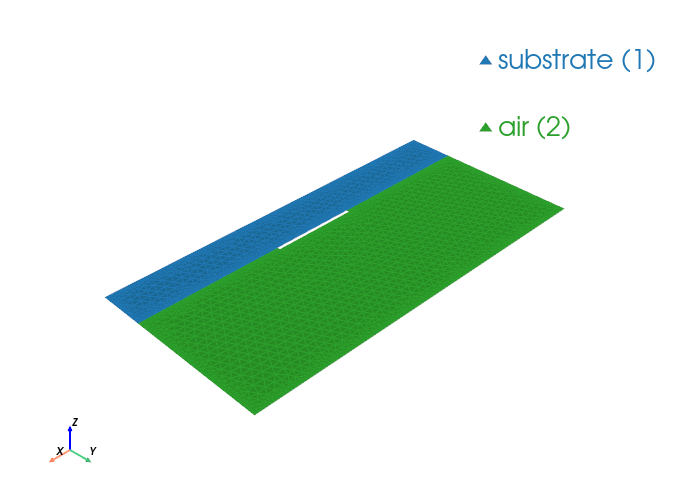

Microstrip Modes#
This notebook builds a simple boxed microstrip cross-section (substrate + air + PEC strip conductor), solves eigenmodes with WaveguideModeSolver, and plots the first fields.
from palacetoolkit.mode_solver import WaveguideModeSolver, ModeMetrics
from palacetoolkit.viz import view_mesh
import gmsh
import matplotlib.pyplot as plt
import numpy as np
import palacetoolkit.utils as ptk_utils
write_and_finalize_gmsh = ptk_utils.write_and_finalize_gmsh
import inspect
sig = inspect.signature(WaveguideModeSolver.__init__)
print("WaveguideModeSolver.__init__ signature:")
print(sig)
print("\nPEC conductor support via boundary attributes:", "pec_bdr" in sig.parameters)
print("The solver enforces PEC by essential DOF elimination on selected boundary attributes.")
WaveguideModeSolver.__init__ signature:
(self, mesh_file: 'str', order: 'int' = 2, pec_bdr: 'list[int] | str | None' = None, materials: 'list[dict[str, Any]] | None' = None, omega: 'float' = 62831853071.79586, L0: 'float' = 1.0)
PEC conductor support via boundary attributes: True
The solver enforces PEC by essential DOF elimination on selected boundary attributes.
def make_microstrip_mesh(
box_w=8.0,
h_sub=1.0,
h_air=3.0,
strip_w=1.8,
strip_t=0.06,
lc_bulk=0.18,
lc_strip=0.05,
meshsize=1.0,
filename=None,
):
gmsh.initialize()
gmsh.option.setNumber("General.Verbosity", 0)
gmsh.model.add("microstrip_modes")
sub = gmsh.model.occ.addRectangle(-box_w / 2, -h_sub, 0, box_w, h_sub)
air = gmsh.model.occ.addRectangle(-box_w / 2, 0.0, 0, box_w, h_air)
strip = gmsh.model.occ.addRectangle(-strip_w / 2, 0.0, 0, strip_w, strip_t)
_, outmap = gmsh.model.occ.fragment([(2, sub), (2, air), (2, strip)], [])
strip_parts = list(outmap[2])
gmsh.model.occ.remove(strip_parts, recursive=True)
gmsh.model.occ.synchronize()
all_surfs = [t for _, t in gmsh.model.getEntities(2)]
substrate_surfs = []
air_surfs = []
for tag in all_surfs:
_, cy, _ = gmsh.model.occ.getCenterOfMass(2, tag)
if cy < -1e-9:
substrate_surfs.append(tag)
else:
air_surfs.append(tag)
if not substrate_surfs or not air_surfs:
gmsh.finalize()
raise RuntimeError("Failed to classify substrate/air surfaces for microstrip mesh")
gmsh.model.addPhysicalGroup(2, substrate_surfs, tag=1, name="substrate")
gmsh.model.addPhysicalGroup(2, air_surfs, tag=2, name="air")
bnd = gmsh.model.getBoundary([(2, t) for t in substrate_surfs + air_surfs], oriented=False, combined=False)
edge_tags = sorted({abs(t) for _, t in bnd})
strip_edges = []
ground_edges = []
open_edges = []
for et in edge_tags:
ex, ey, _ = gmsh.model.occ.getCenterOfMass(1, et)
on_strip_x = abs(ex) <= strip_w / 2 + 1e-6
on_strip_y = (-1e-6 <= ey <= strip_t + 1e-6)
if on_strip_x and on_strip_y:
strip_edges.append(et)
continue
# Ground plane is the lower boundary of the simulation box.
if abs(ey + h_sub) <= 1e-6:
ground_edges.append(et)
else:
open_edges.append(et)
if ground_edges:
gmsh.model.addPhysicalGroup(1, ground_edges, tag=1, name="ground_plane")
if strip_edges:
gmsh.model.addPhysicalGroup(1, strip_edges, tag=2, name="strip_conductor")
if open_edges:
gmsh.model.addPhysicalGroup(1, open_edges, tag=3, name="open_boundary")
if meshsize <= 0:
gmsh.finalize()
raise ValueError("meshsize must be positive")
lc_bulk_eff = lc_bulk * meshsize
lc_strip_eff = lc_strip * meshsize
# Use a distance-based field from all curves so refinement occurs
# near any geometry boundary (PEC and domain boundaries).
all_curves = sorted({t for _, t in gmsh.model.getEntities(1)})
dist_field = gmsh.model.mesh.field.add("Distance")
gmsh.model.mesh.field.setNumbers(dist_field, "CurvesList", all_curves)
gmsh.model.mesh.field.setNumber(dist_field, "Sampling", 200)
threshold_field = gmsh.model.mesh.field.add("Threshold")
gmsh.model.mesh.field.setNumber(threshold_field, "InField", dist_field)
gmsh.model.mesh.field.setNumber(threshold_field, "SizeMin", lc_strip_eff)
gmsh.model.mesh.field.setNumber(threshold_field, "SizeMax", lc_bulk_eff)
gmsh.model.mesh.field.setNumber(threshold_field, "DistMin", 0.0)
gmsh.model.mesh.field.setNumber(threshold_field, "DistMax", 0.35 * h_sub)
gmsh.model.mesh.field.setAsBackgroundMesh(threshold_field)
gmsh.option.setNumber("Mesh.CharacteristicLengthFromPoints", 0)
gmsh.option.setNumber("Mesh.CharacteristicLengthFromCurvature", 0)
gmsh.option.setNumber("Mesh.CharacteristicLengthExtendFromBoundary", 0)
gmsh.option.setNumber("Mesh.CharacteristicLengthMin", lc_strip_eff)
gmsh.option.setNumber("Mesh.CharacteristicLengthMax", lc_bulk_eff)
gmsh.model.mesh.generate(2)
return write_and_finalize_gmsh(filename, prefix="wg_microstrip_")
eps_sub = 4.8
eps_air = 1.0
mu_r = 1.0
omega = 1.0
kn_air = omega * np.sqrt(mu_r * eps_air)
kn_sub = omega * np.sqrt(mu_r * eps_sub)
print(f"Reference phase window (air to substrate): {kn_air:.4f} < kn < {kn_sub:.4f}")
Reference phase window (air to substrate): 1.0000 < kn < 2.1909
mesh_file = make_microstrip_mesh(
box_w=8.0,
h_sub=1.0,
h_air=3.0,
strip_w=1.8,
strip_t=0.06,
lc_bulk=0.18,
lc_strip=0.05,
meshsize=1.0, # decrease for convergence checks (e.g. 0.7, 0.5)
)
view_mesh(mesh_file)
# WaveguideModeSolver currently supports PEC marking via pec_bdr; it does not
# provide an absorbing boundary-condition model.
pec_bdr = [1, 2] # ground plane + strip conductor
solver = WaveguideModeSolver(
mesh_file=mesh_file,
order=2,
pec_bdr=pec_bdr,
materials=[
{"attrs": [1], "eps_r": eps_sub, "mu_r": mu_r},
{"attrs": [2], "eps_r": eps_air, "mu_r": mu_r},
],
omega=omega,
)
results = solver.solve(num_modes=8, mode_idx=1, target=0.0, save=0, num_procs=4)
print("Computed microstrip modes:")
for i in sorted(results):
kn = results[i].k_n
if kn_air < kn.real < kn_sub and abs(kn.imag) < 0.1 * abs(kn.real):
mode_type = "bound/hybrid"
elif abs(kn.imag) > 0.1 * abs(kn.real):
mode_type = "evanescent"
else:
mode_type = "radiative or box mode"
print(f" Mode {i:2d}: kn={kn.real:+10.6f}{kn.imag:+10.6f}j [{mode_type}]")
Loading mesh file: /tmp/wg_microstrip_ua7p_21y.msh
Groups to render transparent: ['air_none', 'air_plastic_enclosure']
Mesh loaded successfully with 2 cell blocks
Found 5778 triangles total
Physical group tags in mesh: {1: 'substrate', 2: 'air'}

Running: /home/martin/.cache/palacetoolkit/runtime/palace-cpu-v0.17.0/bin/palace --serial /tmp/wg_microstrip_ua7p_21y_modes/config.json
>> /home/martin/.cache/palacetoolkit/runtime/palace-cpu-v0.17.0/bin/palace-x86_64.bin /tmp/wg_microstrip_ua7p_21y_modes/config.json
_____________ _______
_____ __ \____ __ /____ ____________
____ /_/ / __ ` / / __ ` / ___/ _ \
___ _____/ /_/ / / /_/ / /__/ ___/
/__/ \___,__/__/\___,__/\_____\_____/
Git changeset ID: v0.17.0-194-g01f5d9bd1
Running with 1 MPI process, 1 OpenMP thread
Device configuration: omp,cpu
Memory configuration: host-std
libCEED backend: /cpu/self/xsmm/blocked
--> Warning!
One or more external boundary attributes has no associated boundary condition!
"PMC"/"ZeroCharge" condition is assumed!
Boundary attribute list: 3
Characteristic length and time scales:
Lc = 8.000e+00 m, tc = 2.669e+01 ns
Finished partitioning mesh into 1 subdomain
Mesh curvature order: 1
Mesh bounding box:
(Xmin, Ymin) = (-4.000e+00, -1.000e+00) m
(Xmax, Ymax) = (+4.000e+00, +3.000e+00) m
Parallel Mesh Stats:
minimum average maximum total
vertices 3156 3156 3156 3156
edges 8934 8934 8934 8934
elements 5778 5778 5778 5778
neighbors 0 0 0
minimum maximum
h 0.00449751 0.0255824
kappa 1 2.60387
Estimated current per-rank memory usage is: Min. 53.1M, Max. 53.1M, Avg. 53.1M, Total 53.1M
Estimated current per-node memory usage is: Min. 53.1M, Max. 53.1M, Avg. 53.1M, Total 53.1M
Configuring 2D waveguide mode analysis at f = 4.775e-02 GHz (omega = 8.005538e+00)
ND space: 29424 DOFs, H1 space: 12090 DOFs, total: 41514
Auto kn_target = 1.839533e+01 (from max(mu_r) * max(epsilon_r) = 4.800000e+00)
Solving GEP for 8 propagation mode(s)...
Residual norms for GMRES solve
0 (restart 0) KSP residual norm 2.590173e-01
1 (restart 0) KSP residual norm 1.328269e-14
GMRES solver converged in 1 iteration (avg. reduction factor: 5.128e-14)
Residual norms for GMRES solve
0 (restart 0) KSP residual norm 4.185439e-02
1 (restart 0) KSP residual norm 2.627508e-15
GMRES solver converged in 1 iteration (avg. reduction factor: 6.278e-14)
Residual norms for GMRES solve
0 (restart 0) KSP residual norm 6.230912e-02
1 (restart 0) KSP residual norm 3.625476e-15
GMRES solver converged in 1 iteration (avg. reduction factor: 5.819e-14)
Residual norms for GMRES solve
0 (restart 0) KSP residual norm 3.704263e-02
1 (restart 0) KSP residual norm 3.786753e-15
GMRES solver converged in 1 iteration (avg. reduction factor: 1.022e-13)
Residual norms for GMRES solve
0 (restart 0) KSP residual norm 1.378110e-02
1 (restart 0) KSP residual norm 1.913951e-15
GMRES solver converged in 1 iteration (avg. reduction factor: 1.389e-13)
Residual norms for GMRES solve
0 (restart 0) KSP residual norm 2.597370e-02
1 (restart 0) KSP residual norm 3.659694e-15
GMRES solver converged in 1 iteration (avg. reduction factor: 1.409e-13)
Residual norms for GMRES solve
0 (restart 0) KSP residual norm 1.755998e-02
1 (restart 0) KSP residual norm 1.921550e-15
GMRES solver converged in 1 iteration (avg. reduction factor: 1.094e-13)
Residual norms for GMRES solve
0 (restart 0) KSP residual norm 2.656758e-02
1 (restart 0) KSP residual norm 1.734372e-15
GMRES solver converged in 1 iteration (avg. reduction factor: 6.528e-14)
Residual norms for GMRES solve
0 (restart 0) KSP residual norm 1.707955e-02
1 (restart 0) KSP residual norm 4.951936e-15
GMRES solver converged in 1 iteration (avg. reduction factor: 2.899e-13)
Residual norms for GMRES solve
0 (restart 0) KSP residual norm 2.201716e-02
1 (restart 0) KSP residual norm 2.034793e-15
GMRES solver converged in 1 iteration (avg. reduction factor: 9.242e-14)
Residual norms for GMRES solve
0 (restart 0) KSP residual norm 2.254559e-02
1 (restart 0) KSP residual norm 1.520688e-15
GMRES solver converged in 1 iteration (avg. reduction factor: 6.745e-14)
Residual norms for GMRES solve
0 (restart 0) KSP residual norm 1.109895e-02
1 (restart 0) KSP residual norm 2.220112e-15
GMRES solver converged in 1 iteration (avg. reduction factor: 2.000e-13)
Residual norms for GMRES solve
0 (restart 0) KSP residual norm 3.579156e-02
1 (restart 0) KSP residual norm 3.395619e-15
GMRES solver converged in 1 iteration (avg. reduction factor: 9.487e-14)
Residual norms for GMRES solve
0 (restart 0) KSP residual norm 1.395744e-02
1 (restart 0) KSP residual norm 1.999866e-15
GMRES solver converged in 1 iteration (avg. reduction factor: 1.433e-13)
Residual norms for GMRES solve
0 (restart 0) KSP residual norm 1.417757e-02
1 (restart 0) KSP residual norm 3.727553e-15
GMRES solver converged in 1 iteration (avg. reduction factor: 2.629e-13)
Residual norms for GMRES solve
0 (restart 0) KSP residual norm 2.736284e-02
1 (restart 0) KSP residual norm 4.780957e-15
GMRES solver converged in 1 iteration (avg. reduction factor: 1.747e-13)
Residual norms for GMRES solve
0 (restart 0) KSP residual norm 2.226306e-02
1 (restart 0) KSP residual norm 7.719523e-15
GMRES solver converged in 1 iteration (avg. reduction factor: 3.467e-13)
Residual norms for GMRES solve
0 (restart 0) KSP residual norm 1.941762e-02
1 (restart 0) KSP residual norm 2.031838e-15
GMRES solver converged in 1 iteration (avg. reduction factor: 1.046e-13)
Residual norms for GMRES solve
0 (restart 0) KSP residual norm 4.319402e-02
1 (restart 0) KSP residual norm 5.384407e-15
GMRES solver converged in 1 iteration (avg. reduction factor: 1.247e-13)
Residual norms for GMRES solve
0 (restart 0) KSP residual norm 5.056058e-02
1 (restart 0) KSP residual norm 5.989625e-15
GMRES solver converged in 1 iteration (avg. reduction factor: 1.185e-13)
Residual norms for GMRES solve
0 (restart 0) KSP residual norm 1.522852e-02
1 (restart 0) KSP residual norm 3.239853e-15
GMRES solver converged in 1 iteration (avg. reduction factor: 2.127e-13)
Residual norms for GMRES solve
0 (restart 0) KSP residual norm 1.004315e-02
1 (restart 0) KSP residual norm 4.026939e-15
GMRES solver converged in 1 iteration (avg. reduction factor: 4.010e-13)
Residual norms for GMRES solve
0 (restart 0) KSP residual norm 9.249603e-03
1 (restart 0) KSP residual norm 2.221478e-15
GMRES solver converged in 1 iteration (avg. reduction factor: 2.402e-13)
Residual norms for GMRES solve
0 (restart 0) KSP residual norm 9.298013e-03
1 (restart 0) KSP residual norm 2.936762e-15
GMRES solver converged in 1 iteration (avg. reduction factor: 3.158e-13)
Residual norms for GMRES solve
0 (restart 0) KSP residual norm 1.586526e-02
1 (restart 0) KSP residual norm 4.278535e-15
GMRES solver converged in 1 iteration (avg. reduction factor: 2.697e-13)
Residual norms for GMRES solve
0 (restart 0) KSP residual norm 8.059502e-03
1 (restart 0) KSP residual norm 2.439039e-15
GMRES solver converged in 1 iteration (avg. reduction factor: 3.026e-13)
Residual norms for GMRES solve
0 (restart 0) KSP residual norm 2.006125e-02
1 (restart 0) KSP residual norm 5.254814e-15
GMRES solver converged in 1 iteration (avg. reduction factor: 2.619e-13)
Residual norms for GMRES solve
0 (restart 0) KSP residual norm 1.579398e-02
1 (restart 0) KSP residual norm 4.667490e-15
GMRES solver converged in 1 iteration (avg. reduction factor: 2.955e-13)
Residual norms for GMRES solve
0 (restart 0) KSP residual norm 9.190050e-03
1 (restart 0) KSP residual norm 2.959669e-15
GMRES solver converged in 1 iteration (avg. reduction factor: 3.221e-13)
Residual norms for GMRES solve
0 (restart 0) KSP residual norm 1.066442e-02
1 (restart 0) KSP residual norm 4.132078e-15
GMRES solver converged in 1 iteration (avg. reduction factor: 3.875e-13)
Residual norms for GMRES solve
0 (restart 0) KSP residual norm 1.436135e-02
1 (restart 0) KSP residual norm 6.687106e-15
GMRES solver converged in 1 iteration (avg. reduction factor: 4.656e-13)
Residual norms for GMRES solve
0 (restart 0) KSP residual norm 8.989860e-03
1 (restart 0) KSP residual norm 5.678809e-15
GMRES solver converged in 1 iteration (avg. reduction factor: 6.317e-13)
Residual norms for GMRES solve
0 (restart 0) KSP residual norm 7.313331e-03
1 (restart 0) KSP residual norm 4.692941e-15
GMRES solver converged in 1 iteration (avg. reduction factor: 6.417e-13)
Residual norms for GMRES solve
0 (restart 0) KSP residual norm 6.874409e-03
1 (restart 0) KSP residual norm 6.301409e-15
GMRES solver converged in 1 iteration (avg. reduction factor: 9.166e-13)
Residual norms for GMRES solve
0 (restart 0) KSP residual norm 6.068884e-03
1 (restart 0) KSP residual norm 1.254945e-14
GMRES solver converged in 1 iteration (avg. reduction factor: 2.068e-12)
Residual norms for GMRES solve
0 (restart 0) KSP residual norm 1.587518e-02
1 (restart 0) KSP residual norm 2.293166e-14
GMRES solver converged in 1 iteration (avg. reduction factor: 1.444e-12)
Residual norms for GMRES solve
0 (restart 0) KSP residual norm 9.266762e-03
1 (restart 0) KSP residual norm 1.181797e-14
GMRES solver converged in 1 iteration (avg. reduction factor: 1.275e-12)
Residual norms for GMRES solve
0 (restart 0) KSP residual norm 1.226467e-02
1 (restart 0) KSP residual norm 8.482785e-15
GMRES solver converged in 1 iteration (avg. reduction factor: 6.916e-13)
Residual norms for GMRES solve
0 (restart 0) KSP residual norm 1.664414e-02
1 (restart 0) KSP residual norm 1.515536e-14
GMRES solver converged in 1 iteration (avg. reduction factor: 9.106e-13)
Residual norms for GMRES solve
0 (restart 0) KSP residual norm 1.501050e-02
1 (restart 0) KSP residual norm 2.055891e-14
GMRES solver converged in 1 iteration (avg. reduction factor: 1.370e-12)
Residual norms for GMRES solve
0 (restart 0) KSP residual norm 2.590403e-02
1 (restart 0) KSP residual norm 3.782486e-14
GMRES solver converged in 1 iteration (avg. reduction factor: 1.460e-12)
Residual norms for GMRES solve
0 (restart 0) KSP residual norm 1.817729e-02
1 (restart 0) KSP residual norm 3.874319e-14
GMRES solver converged in 1 iteration (avg. reduction factor: 2.131e-12)
Residual norms for GMRES solve
0 (restart 0) KSP residual norm 3.241467e-02
1 (restart 0) KSP residual norm 5.101975e-14
GMRES solver converged in 1 iteration (avg. reduction factor: 1.574e-12)
Residual norms for GMRES solve
0 (restart 0) KSP residual norm 1.920000e-02
1 (restart 0) KSP residual norm 2.874771e-14
GMRES solver converged in 1 iteration (avg. reduction factor: 1.497e-12)
Residual norms for GMRES solve
0 (restart 0) KSP residual norm 2.267319e-02
1 (restart 0) KSP residual norm 3.179340e-14
GMRES solver converged in 1 iteration (avg. reduction factor: 1.402e-12)
Residual norms for GMRES solve
0 (restart 0) KSP residual norm 1.673746e-02
1 (restart 0) KSP residual norm 3.162260e-14
GMRES solver converged in 1 iteration (avg. reduction factor: 1.889e-12)
Residual norms for GMRES solve
0 (restart 0) KSP residual norm 1.783290e-02
1 (restart 0) KSP residual norm 3.322352e-14
GMRES solver converged in 1 iteration (avg. reduction factor: 1.863e-12)
Residual norms for GMRES solve
0 (restart 0) KSP residual norm 1.809951e-02
1 (restart 0) KSP residual norm 2.980041e-14
GMRES solver converged in 1 iteration (avg. reduction factor: 1.646e-12)
Residual norms for GMRES solve
0 (restart 0) KSP residual norm 1.074876e-02
1 (restart 0) KSP residual norm 1.100211e-14
GMRES solver converged in 1 iteration (avg. reduction factor: 1.024e-12)
Residual norms for GMRES solve
0 (restart 0) KSP residual norm 1.984934e-02
1 (restart 0) KSP residual norm 1.544780e-14
GMRES solver converged in 1 iteration (avg. reduction factor: 7.783e-13)
Residual norms for GMRES solve
0 (restart 0) KSP residual norm 1.542955e-02
1 (restart 0) KSP residual norm 1.713998e-14
GMRES solver converged in 1 iteration (avg. reduction factor: 1.111e-12)
Residual norms for GMRES solve
0 (restart 0) KSP residual norm 1.148409e-02
1 (restart 0) KSP residual norm 1.796412e-14
GMRES solver converged in 1 iteration (avg. reduction factor: 1.564e-12)
Residual norms for GMRES solve
0 (restart 0) KSP residual norm 1.440093e-02
1 (restart 0) KSP residual norm 2.189634e-14
GMRES solver converged in 1 iteration (avg. reduction factor: 1.520e-12)
Residual norms for GMRES solve
0 (restart 0) KSP residual norm 1.567960e-02
1 (restart 0) KSP residual norm 2.599809e-14
GMRES solver converged in 1 iteration (avg. reduction factor: 1.658e-12)
Residual norms for GMRES solve
0 (restart 0) KSP residual norm 1.962330e-02
1 (restart 0) KSP residual norm 1.613376e-14
GMRES solver converged in 1 iteration (avg. reduction factor: 8.222e-13)
Residual norms for GMRES solve
0 (restart 0) KSP residual norm 1.450862e-02
1 (restart 0) KSP residual norm 1.369595e-14
GMRES solver converged in 1 iteration (avg. reduction factor: 9.440e-13)
Residual norms for GMRES solve
0 (restart 0) KSP residual norm 1.792107e-02
1 (restart 0) KSP residual norm 1.735424e-14
GMRES solver converged in 1 iteration (avg. reduction factor: 9.684e-13)
Residual norms for GMRES solve
0 (restart 0) KSP residual norm 1.341649e-02
1 (restart 0) KSP residual norm 2.125982e-14
GMRES solver converged in 1 iteration (avg. reduction factor: 1.585e-12)
Residual norms for GMRES solve
0 (restart 0) KSP residual norm 1.450146e-02
1 (restart 0) KSP residual norm 2.067335e-14
GMRES solver converged in 1 iteration (avg. reduction factor: 1.426e-12)
Residual norms for GMRES solve
0 (restart 0) KSP residual norm 1.666416e-02
1 (restart 0) KSP residual norm 2.428070e-14
GMRES solver converged in 1 iteration (avg. reduction factor: 1.457e-12)
Found 11 converged eigenvalues (sigma = -3.383880e+02)
eig 0: kn = 1.678566e+01-1.935885e-14i, n_eff = 2.096756e+00-2.418182e-15i
eig 1: kn = 1.406124e+01-1.025850e-11i, n_eff = 1.756439e+00-1.281426e-12i
eig 2: kn = 1.302446e+01-8.650762e-10i, n_eff = 1.626931e+00-1.080597e-10i
eig 3: kn = 1.225619e+01+8.960126e-08i, n_eff = 1.530964e+00+1.119241e-08i
eig 4: kn = 8.941567e+00+1.005936e-09i, n_eff = 1.116923e+00+1.256551e-10i
eig 5: kn = 8.557204e+00+1.068249e-07i, n_eff = 1.068911e+00+1.334388e-08i
eig 6: kn = 6.883905e+00+4.975056e-10i, n_eff = 8.598929e-01+6.214517e-11i
eig 7: kn = 5.399019e+00+3.001000e-09i, n_eff = 6.744105e-01+3.748655e-10i
eig 8: kn = 5.375352e+00+1.003219e-07i, n_eff = 6.714542e-01+1.253156e-08i
eig 9: kn = 4.115671e+00+1.226962e-07i, n_eff = 5.141029e-01+1.532642e-08i
eig 10: kn = 2.175968e+00-4.515314e-08i, n_eff = 2.718078e-01-5.640238e-09i
Computing solution error estimates and performing postprocessing
m, Re{kn} (1/m), Im{kn} (1/m), Re{n_eff}, Im{n_eff}, Error (Bkwd.), Error (Abs.)
1, +2.098207e+00, -2.419856e-15, +2.096756e+00, -2.418182e-15, +1.316484e-16, +1.696809e-12
2, +1.757655e+00, -1.282313e-12, +1.756439e+00, -1.281426e-12, +1.940129e-15, +1.006846e-11
3, +1.628057e+00, -1.081345e-10, +1.626931e+00, -1.080597e-10, +2.464282e-13, +1.066102e-09
4, +1.532024e+00, +1.120016e-08, +1.530964e+00, +1.119241e-08, +6.572197e-12, +2.549904e-08
5, +1.117696e+00, +1.257420e-10, +1.116923e+00, +1.256551e-10, +1.158186e-13, +3.272324e-10
6, +1.069651e+00, +1.335312e-08, +1.068911e+00, +1.334388e-08, +5.743808e-12, +1.581704e-08
7, +8.604882e-01, +6.218819e-11, +8.598929e-01, +6.214517e-11, +4.583298e-13, +1.150123e-09
8, +6.748773e-01, +3.751250e-10, +6.744105e-01, +3.748655e-10, +3.160914e-13, +7.464370e-10
Completed 0 iterations of adaptive mesh refinement (AMR):
Indicator norm = 2.602e-02, global unknowns = 41514
Max. iterations = 0, tol. = 1.000e-02
Estimated peak per-rank memory usage is: Min. 283.9M, Max. 283.9M, Avg. 283.9M, Total 283.9M
Estimated peak per-node memory usage is: Min. 283.9M, Max. 283.9M, Avg. 283.9M, Total 283.9M
Elapsed Time Report (s) Min. Max. Avg.
==============================================================
Initialization 0.013 0.013 0.013
Mesh Preprocessing 0.022 0.022 0.022
Operator Construction 0.081 0.081 0.081
Preconditioner 1.296 1.296 1.296
Eigenvalue Solve 0.323 0.323 0.323
Estimation 0.021 0.021 0.021
Construction 0.124 0.124 0.124
Solve 0.349 0.349 0.349
Postprocessing 1.343 1.343 1.343
Disk IO 0.012 0.012 0.012
--------------------------------------------------------------
Total 4.122 4.122 4.122
Peak Memory Per-Node Total Total HWM
==============================================================
Initialization 1.6M 1.6M 1.6M
Mesh Preprocessing 3.5M 3.5M 5.2M
Operator Construction 35.5M 35.5M 40.6M
Preconditioner 143.1M 143.1M 183.7M
Eigenvalue Solve 46.4M 46.4M 230.2M
Estimation 0.0K 0.0K 230.2M
Construction 6.9M 6.9M 237.1M
Solve 0.0K 0.0K 237.1M
Postprocessing 0.0K 0.0K 237.1M
Disk IO 2.4M 2.4M 239.5M
--------------------------------------------------------------
Total 260.5M 260.5M 260.5M
Computed microstrip modes:
Mode 1: kn= +2.098207 -0.000000j [bound/hybrid]
# Field visualization is no longer available through the solver.
# Palace writes VTU field output files when save > 0 in solver.solve().
# Load the VTU files with pyvista for field visualization.
# For more details, see palacetoolkit.postpro_vtu utilities.
print("Field visualization moved to pyvista-based VTU post-processing.")
Field visualization moved to pyvista-based VTU post-processing.
Validation vs. Hammerstad-Jensen#
To validate loss prediction, we compare transmission magnitude estimated from solver-derived effective permittivity against a Hammerstad-Jensen-based dielectric-loss model.
Validation sweep setup (kept comfortably inside commonly used validity limits):
Relative permittivity: \(2.2 \le \varepsilon_r \le 6.15\)
Width ratio: \(0.8 \le w/h \le 2.5\)
Thin strip: \(t/h = 0.04\)
Low-loss dielectric: \(\tan\delta = 0.002\)
For each case, we compute:
Solver-derived: run eigenmode with real \(\varepsilon_r\), infer \(\varepsilon_{\mathrm{eff,solver}}=(\Re\{k_n\}/\omega)^2/\mu_r\), then use low-loss dielectric estimate for \(\alpha\)
HJ-based reference: \(|S_{21}|_{\mathrm{HJ}} \approx e^{-\alpha_{\mathrm{HJ}}L}\) using \(\varepsilon_{\mathrm{eff,HJ}}\) and a quasi-static dielectric filling factor
Impedance comparison: two numerical estimates are used: (i) contour-based \(Z_{0,VI}=|V/I|\) and (ii) quasi-static energy/capacitance estimate \(Z_{0,C}\), both compared to analytic \(Z_{0,\mathrm{HJ}}\)
Low-loss approximation used in this cell:
For a weakly lossy dielectric, write the propagation constant as \(\gamma = \alpha + j\beta\) and use \(\varepsilon = \varepsilon'(1-j\tan\delta_{\mathrm{eff}})\) with \(\tan\delta_{\mathrm{eff}} \ll 1\).
First-order expansion gives \(\alpha \approx \tfrac{\beta}{2}\tan\delta_{\mathrm{eff}}\).
In quasi-TEM form, \(\beta \approx \omega\sqrt{\mu_r\varepsilon_{\mathrm{eff}}}\).
We estimate \(\tan\delta_{\mathrm{eff}} = q\,\tan\delta\) with filling factor \(q \approx (\varepsilon_{\mathrm{eff}}-1)/(\varepsilon_r-1)\).
Therefore, \(\alpha \approx \tfrac{1}{2}\,\omega\sqrt{\mu_r\varepsilon_{\mathrm{eff}}}\,q\tan\delta\) and \(|S_{21}| \approx e^{-\alpha L}\).
Note: this eigenmode setup uses PEC conductors and real-valued material tensors, so this section validates dielectric loss contribution (not conductor loss).
def hammerstad_jensen_eps_eff(er, u):
if u <= 0:
raise ValueError("u = w/h must be positive")
a = 1.0 + (1.0 / 49.0) * np.log((u**4 + (u / 52.0) ** 2) / (u**4 + 0.432))
a += (1.0 / 18.7) * np.log(1.0 + u / 18.1)
b = 0.564 * ((er - 0.9) / (er + 3.0)) ** 0.053
return 0.5 * (er + 1.0) + 0.5 * (er - 1.0) * (1.0 + 10.0 / u) ** (-a * b)
def hj_dielectric_alpha(omega, er, eeff, tand):
q = (eeff - 1.0) / max(er - 1.0, 1e-12)
tand_eff = q * tand
beta_hj = omega * np.sqrt(mu_r * eeff)
return 0.5 * beta_hj * tand_eff
def hammerstad_jensen_z0(er, u):
eeff = hammerstad_jensen_eps_eff(er, u)
f = 6.0 + (2.0 * np.pi - 6.0) * np.exp(-((30.666 / u) ** 0.7528))
return (60.0 / np.sqrt(eeff)) * np.log(f / u + np.sqrt(1.0 + (2.0 / u) ** 2))
def pick_guided_mode(kn_vals, omega, mu_r, eps_air, eps_sub):
k_air = omega * np.sqrt(mu_r * eps_air)
k_sub = omega * np.sqrt(mu_r * eps_sub)
guided = [
kn for kn in kn_vals
if (k_air * 1.001) < kn.real < (k_sub * 0.999) and abs(kn.imag) < 0.05 * max(abs(kn.real), 1e-12)
]
if guided:
return sorted(guided, key=lambda z: z.real)[-1]
return sorted(kn_vals, key=lambda z: abs(z.imag))[0]
validation_cases = [
{"eps_sub": 2.2, "w_over_h": 0.8},
{"eps_sub": 2.2, "w_over_h": 1.6},
{"eps_sub": 4.4, "w_over_h": 1.0},
{"eps_sub": 4.4, "w_over_h": 2.0},
{"eps_sub": 6.15, "w_over_h": 1.2},
{"eps_sub": 6.15, "w_over_h": 2.5},
]
h_sub_val = 1.0
h_air_val = 3.0
box_w_val = 8.0
strip_t_val = 0.04 * h_sub_val
tand_sub = 0.002
line_length = 40.0 * h_sub_val
eta0 = 376.730313668
meshsize_val = 1.0
rows = []
for case in validation_cases:
er = case["eps_sub"]
u = case["w_over_h"]
strip_w = u * h_sub_val
mesh_case = make_microstrip_mesh(
box_w=box_w_val,
h_sub=h_sub_val,
h_air=h_air_val,
strip_w=strip_w,
strip_t=strip_t_val,
lc_bulk=0.18,
lc_strip=0.05,
meshsize=meshsize_val,
)
solver_case = WaveguideModeSolver(
mesh_file=mesh_case,
order=2,
pec_bdr=pec_bdr,
materials=[
{"attrs": [1], "eps_r": er, "mu_r": mu_r},
{"attrs": [2], "eps_r": eps_air, "mu_r": mu_r},
],
omega=omega,
)
res_case = solver_case.solve(num_modes=8, mode_idx=1, target=0.0, save=0, num_procs=4)
kn_vals = [res_case[i].k_n for i in sorted(res_case)]
kn_pick = pick_guided_mode(kn_vals, omega, mu_r, eps_air, er)
eps_eff_solver = (kn_pick.real / omega) ** 2 / mu_r
alpha_solver = hj_dielectric_alpha(omega, er, eps_eff_solver, tand_sub)
s21_solver = np.exp(-alpha_solver * line_length)
eps_eff_hj = hammerstad_jensen_eps_eff(er, u)
alpha_hj = hj_dielectric_alpha(omega, er, eps_eff_hj, tand_sub)
s21_hj = np.exp(-alpha_hj * line_length)
z0_hj = hammerstad_jensen_z0(er, u)
eps_eff_err_pct = 100.0 * (eps_eff_solver - eps_eff_hj) / max(eps_eff_hj, 1e-12)
err_pct = 100.0 * (s21_solver - s21_hj) / max(s21_hj, 1e-12)
il_solver_db = -20.0 * np.log10(max(s21_solver, 1e-14))
il_hj_db = -20.0 * np.log10(max(s21_hj, 1e-14))
rows.append((er, u, eps_eff_solver, eps_eff_hj, eps_eff_err_pct, s21_solver, s21_hj, err_pct, z0_hj, il_solver_db, il_hj_db))
Running: /home/martin/.cache/palacetoolkit/runtime/palace-cpu-v0.17.0/bin/palace --serial /tmp/wg_microstrip_223tdxhg_modes/config.json
>> /home/martin/.cache/palacetoolkit/runtime/palace-cpu-v0.17.0/bin/palace-x86_64.bin /tmp/wg_microstrip_223tdxhg_modes/config.json
_____________ _______
_____ __ \____ __ /____ ____________
____ /_/ / __ ` / / __ ` / ___/ _ \
___ _____/ /_/ / / /_/ / /__/ ___/
/__/ \___,__/__/\___,__/\_____\_____/
Git changeset ID: v0.17.0-194-g01f5d9bd1
Running with 1 MPI process, 1 OpenMP thread
Device configuration: omp,cpu
Memory configuration: host-std
libCEED backend: /cpu/self/xsmm/blocked
--> Warning!
One or more external boundary attributes has no associated boundary condition!
"PMC"/"ZeroCharge" condition is assumed!
Boundary attribute list: 3
Characteristic length and time scales:
Lc = 8.000e+00 m, tc = 2.669e+01 ns
Finished partitioning mesh into 1 subdomain
Mesh curvature order: 1
Mesh bounding box:
(Xmin, Ymin) = (-4.000e+00, -1.000e+00) m
(Xmax, Ymax) = (+4.000e+00, +3.000e+00) m
Parallel Mesh Stats:
minimum average maximum total
vertices 3155 3155 3155 3155
edges 8973 8973 8973 8973
elements 5818 5818 5818 5818
neighbors 0 0 0
minimum maximum
h 0.00467942 0.0262638
kappa 1 2.49462
Estimated current per-rank memory usage is: Min. 53.6M, Max. 53.6M, Avg. 53.6M, Total 53.6M
Estimated current per-node memory usage is: Min. 53.6M, Max. 53.6M, Avg. 53.6M, Total 53.6M
Configuring 2D waveguide mode analysis at f = 4.775e-02 GHz (omega = 8.005538e+00)
ND space: 29582 DOFs, H1 space: 12128 DOFs, total: 41710
Auto kn_target = 1.245369e+01 (from max(mu_r) * max(epsilon_r) = 2.200000e+00)
Solving GEP for 8 propagation mode(s)...
Residual norms for GMRES solve
0 (restart 0) KSP residual norm 3.100965e-01
1 (restart 0) KSP residual norm 7.705641e-14
GMRES solver converged in 1 iteration (avg. reduction factor: 2.485e-13)
Residual norms for GMRES solve
0 (restart 0) KSP residual norm 7.133806e-02
1 (restart 0) KSP residual norm 2.249978e-14
GMRES solver converged in 1 iteration (avg. reduction factor: 3.154e-13)
Residual norms for GMRES solve
0 (restart 0) KSP residual norm 3.330713e-02
1 (restart 0) KSP residual norm 2.224838e-14
GMRES solver converged in 1 iteration (avg. reduction factor: 6.680e-13)
Residual norms for GMRES solve
0 (restart 0) KSP residual norm 9.183260e-02
1 (restart 0) KSP residual norm 2.575477e-14
GMRES solver converged in 1 iteration (avg. reduction factor: 2.805e-13)
Residual norms for GMRES solve
0 (restart 0) KSP residual norm 6.034076e-02
1 (restart 0) KSP residual norm 2.219439e-14
GMRES solver converged in 1 iteration (avg. reduction factor: 3.678e-13)
Residual norms for GMRES solve
0 (restart 0) KSP residual norm 3.039053e-02
1 (restart 0) KSP residual norm 1.826701e-14
GMRES solver converged in 1 iteration (avg. reduction factor: 6.011e-13)
Residual norms for GMRES solve
0 (restart 0) KSP residual norm 3.091490e-02
1 (restart 0) KSP residual norm 9.130210e-15
GMRES solver converged in 1 iteration (avg. reduction factor: 2.953e-13)
Residual norms for GMRES solve
0 (restart 0) KSP residual norm 3.127585e-02
1 (restart 0) KSP residual norm 3.025285e-14
GMRES solver converged in 1 iteration (avg. reduction factor: 9.673e-13)
Residual norms for GMRES solve
0 (restart 0) KSP residual norm 3.924276e-02
1 (restart 0) KSP residual norm 4.563365e-14
GMRES solver converged in 1 iteration (avg. reduction factor: 1.163e-12)
Residual norms for GMRES solve
0 (restart 0) KSP residual norm 4.183523e-02
1 (restart 0) KSP residual norm 3.309396e-14
GMRES solver converged in 1 iteration (avg. reduction factor: 7.911e-13)
Residual norms for GMRES solve
0 (restart 0) KSP residual norm 3.493977e-02
1 (restart 0) KSP residual norm 2.142515e-14
GMRES solver converged in 1 iteration (avg. reduction factor: 6.132e-13)
Residual norms for GMRES solve
0 (restart 0) KSP residual norm 5.538677e-02
1 (restart 0) KSP residual norm 3.644159e-14
GMRES solver converged in 1 iteration (avg. reduction factor: 6.579e-13)
Residual norms for GMRES solve
0 (restart 0) KSP residual norm 3.276773e-02
1 (restart 0) KSP residual norm 4.007012e-14
GMRES solver converged in 1 iteration (avg. reduction factor: 1.223e-12)
Residual norms for GMRES solve
0 (restart 0) KSP residual norm 5.181967e-02
1 (restart 0) KSP residual norm 4.632873e-14
GMRES solver converged in 1 iteration (avg. reduction factor: 8.940e-13)
Residual norms for GMRES solve
0 (restart 0) KSP residual norm 1.643933e-02
1 (restart 0) KSP residual norm 1.822709e-14
GMRES solver converged in 1 iteration (avg. reduction factor: 1.109e-12)
Residual norms for GMRES solve
0 (restart 0) KSP residual norm 2.276258e-02
1 (restart 0) KSP residual norm 1.650017e-14
GMRES solver converged in 1 iteration (avg. reduction factor: 7.249e-13)
Residual norms for GMRES solve
0 (restart 0) KSP residual norm 2.974824e-02
1 (restart 0) KSP residual norm 2.758401e-14
GMRES solver converged in 1 iteration (avg. reduction factor: 9.272e-13)
Residual norms for GMRES solve
0 (restart 0) KSP residual norm 5.738354e-02
1 (restart 0) KSP residual norm 5.087657e-14
GMRES solver converged in 1 iteration (avg. reduction factor: 8.866e-13)
Residual norms for GMRES solve
0 (restart 0) KSP residual norm 4.145720e-02
1 (restart 0) KSP residual norm 6.099776e-14
GMRES solver converged in 1 iteration (avg. reduction factor: 1.471e-12)
Residual norms for GMRES solve
0 (restart 0) KSP residual norm 2.039118e-02
1 (restart 0) KSP residual norm 1.067388e-13
GMRES solver converged in 1 iteration (avg. reduction factor: 5.235e-12)
Residual norms for GMRES solve
0 (restart 0) KSP residual norm 2.535613e-02
1 (restart 0) KSP residual norm 9.119077e-14
GMRES solver converged in 1 iteration (avg. reduction factor: 3.596e-12)
Residual norms for GMRES solve
0 (restart 0) KSP residual norm 1.705886e-02
1 (restart 0) KSP residual norm 9.258924e-14
GMRES solver converged in 1 iteration (avg. reduction factor: 5.428e-12)
Residual norms for GMRES solve
0 (restart 0) KSP residual norm 2.354642e-02
1 (restart 0) KSP residual norm 1.425756e-13
GMRES solver converged in 1 iteration (avg. reduction factor: 6.055e-12)
Residual norms for GMRES solve
0 (restart 0) KSP residual norm 3.288240e-02
1 (restart 0) KSP residual norm 2.347837e-13
GMRES solver converged in 1 iteration (avg. reduction factor: 7.140e-12)
Residual norms for GMRES solve
0 (restart 0) KSP residual norm 2.953435e-02
1 (restart 0) KSP residual norm 9.277367e-14
GMRES solver converged in 1 iteration (avg. reduction factor: 3.141e-12)
Residual norms for GMRES solve
0 (restart 0) KSP residual norm 3.056241e-02
1 (restart 0) KSP residual norm 1.096947e-13
GMRES solver converged in 1 iteration (avg. reduction factor: 3.589e-12)
Residual norms for GMRES solve
0 (restart 0) KSP residual norm 2.912015e-02
1 (restart 0) KSP residual norm 3.633498e-14
GMRES solver converged in 1 iteration (avg. reduction factor: 1.248e-12)
Residual norms for GMRES solve
0 (restart 0) KSP residual norm 7.635564e-02
1 (restart 0) KSP residual norm 7.011694e-14
GMRES solver converged in 1 iteration (avg. reduction factor: 9.183e-13)
Residual norms for GMRES solve
0 (restart 0) KSP residual norm 1.647252e-02
1 (restart 0) KSP residual norm 4.943703e-14
GMRES solver converged in 1 iteration (avg. reduction factor: 3.001e-12)
Residual norms for GMRES solve
0 (restart 0) KSP residual norm 4.056225e-02
1 (restart 0) KSP residual norm 3.621616e-14
GMRES solver converged in 1 iteration (avg. reduction factor: 8.929e-13)
Residual norms for GMRES solve
0 (restart 0) KSP residual norm 4.873419e-02
1 (restart 0) KSP residual norm 3.618383e-14
GMRES solver converged in 1 iteration (avg. reduction factor: 7.425e-13)
Residual norms for GMRES solve
0 (restart 0) KSP residual norm 5.457925e-02
1 (restart 0) KSP residual norm 9.931507e-14
GMRES solver converged in 1 iteration (avg. reduction factor: 1.820e-12)
Residual norms for GMRES solve
0 (restart 0) KSP residual norm 2.969016e-02
1 (restart 0) KSP residual norm 9.003320e-14
GMRES solver converged in 1 iteration (avg. reduction factor: 3.032e-12)
Residual norms for GMRES solve
0 (restart 0) KSP residual norm 3.068665e-02
1 (restart 0) KSP residual norm 8.508794e-14
GMRES solver converged in 1 iteration (avg. reduction factor: 2.773e-12)
Residual norms for GMRES solve
0 (restart 0) KSP residual norm 3.598087e-02
1 (restart 0) KSP residual norm 9.868521e-14
GMRES solver converged in 1 iteration (avg. reduction factor: 2.743e-12)
Residual norms for GMRES solve
0 (restart 0) KSP residual norm 2.747376e-02
1 (restart 0) KSP residual norm 1.006020e-13
GMRES solver converged in 1 iteration (avg. reduction factor: 3.662e-12)
Residual norms for GMRES solve
0 (restart 0) KSP residual norm 3.602932e-02
1 (restart 0) KSP residual norm 8.748396e-14
GMRES solver converged in 1 iteration (avg. reduction factor: 2.428e-12)
Residual norms for GMRES solve
0 (restart 0) KSP residual norm 2.723347e-02
1 (restart 0) KSP residual norm 5.155798e-14
GMRES solver converged in 1 iteration (avg. reduction factor: 1.893e-12)
Residual norms for GMRES solve
0 (restart 0) KSP residual norm 1.875013e-02
1 (restart 0) KSP residual norm 5.399576e-14
GMRES solver converged in 1 iteration (avg. reduction factor: 2.880e-12)
Residual norms for GMRES solve
0 (restart 0) KSP residual norm 2.610296e-02
1 (restart 0) KSP residual norm 3.752004e-14
GMRES solver converged in 1 iteration (avg. reduction factor: 1.437e-12)
Residual norms for GMRES solve
0 (restart 0) KSP residual norm 4.060724e-02
1 (restart 0) KSP residual norm 6.218970e-14
GMRES solver converged in 1 iteration (avg. reduction factor: 1.531e-12)
Residual norms for GMRES solve
0 (restart 0) KSP residual norm 3.149824e-02
1 (restart 0) KSP residual norm 3.451908e-14
GMRES solver converged in 1 iteration (avg. reduction factor: 1.096e-12)
Found 8 converged eigenvalues (sigma = -1.550945e+02)
eig 0: kn = 1.107937e+01+9.303855e-13i, n_eff = 1.383963e+00+1.162177e-13i
eig 1: kn = 8.622523e+00-1.131015e-10i, n_eff = 1.077070e+00-1.412790e-11i
eig 2: kn = 8.531264e+00+8.617866e-12i, n_eff = 1.065670e+00+1.076488e-12i
eig 3: kn = 6.904515e+00+1.756175e-10i, n_eff = 8.624674e-01+2.193700e-11i
eig 4: kn = 6.171195e+00+1.200353e-10i, n_eff = 7.708657e-01+1.499403e-11i
eig 5: kn = 3.711548e+00+3.532072e-08i, n_eff = 4.636226e-01+4.412036e-09i
eig 6: kn = 5.632047e-01-4.630316e-10i, n_eff = 7.035188e-02-5.783891e-11i
eig 7: kn = 1.180109e-07+3.522642e+00i, n_eff = 1.474116e-08+4.400256e-01i
Computing solution error estimates and performing postprocessing
m, Re{kn} (1/m), Im{kn} (1/m), Re{n_eff}, Im{n_eff}, Error (Bkwd.), Error (Abs.)
1, +1.384921e+00, +1.162982e-13, +1.383963e+00, +1.162177e-13, +6.412314e-17, +1.465684e-12
2, +1.077815e+00, -1.413768e-11, +1.077070e+00, -1.412790e-11, +3.913049e-14, +3.582810e-10
3, +1.066408e+00, +1.077233e-12, +1.065670e+00, +1.076488e-12, +1.142357e-13, +1.026059e-09
4, +8.630644e-01, +2.195219e-11, +8.624674e-01, +2.193700e-11, +4.319171e-14, +2.972763e-10
5, +7.713994e-01, +1.500441e-11, +7.708657e-01, +1.499403e-11, +1.042119e-13, +6.584953e-10
6, +4.639435e-01, +4.415090e-09, +4.636226e-01, +4.412036e-09, +6.470057e-13, +3.385231e-09
7, +7.040058e-02, -5.787895e-11, +7.035188e-02, -5.783891e-11, +8.518289e-14, +4.069454e-10
8, +1.475136e-08, +4.403302e-01, +1.474116e-08, +4.400256e-01, +1.808371e-12, +7.982976e-09
Completed 0 iterations of adaptive mesh refinement (AMR):
Indicator norm = 2.223e-02, global unknowns = 41710
Max. iterations = 0, tol. = 1.000e-02
Estimated peak per-rank memory usage is: Min. 286.0M, Max. 286.0M, Avg. 286.0M, Total 286.0M
Estimated peak per-node memory usage is: Min. 286.0M, Max. 286.0M, Avg. 286.0M, Total 286.0M
Elapsed Time Report (s) Min. Max. Avg.
==============================================================
Initialization 0.007 0.007 0.007
Mesh Preprocessing 0.022 0.022 0.022
Operator Construction 0.064 0.064 0.064
Preconditioner 0.987 0.987 0.987
Eigenvalue Solve 0.239 0.239 0.239
Estimation 0.019 0.019 0.019
Construction 0.148 0.148 0.148
Solve 0.308 0.308 0.308
Postprocessing 1.136 1.136 1.136
Disk IO 0.009 0.009 0.009
--------------------------------------------------------------
Total 3.540 3.540 3.540
Peak Memory Per-Node Total Total HWM
==============================================================
Initialization 2.0M 2.0M 2.0M
Mesh Preprocessing 2.9M 2.9M 4.9M
Operator Construction 35.3M 35.3M 40.2M
Preconditioner 137.0M 137.0M 177.1M
Eigenvalue Solve 54.2M 54.2M 231.3M
Estimation 0.0K 0.0K 231.3M
Construction 7.0M 7.0M 238.3M
Solve 0.0K 0.0K 238.3M
Postprocessing 0.0K 0.0K 238.3M
Disk IO 2.6M 2.6M 240.9M
--------------------------------------------------------------
Total 262.2M 262.2M 262.2M
Running: /home/martin/.cache/palacetoolkit/runtime/palace-cpu-v0.17.0/bin/palace --serial /tmp/wg_microstrip_1pq55hxk_modes/config.json
>> /home/martin/.cache/palacetoolkit/runtime/palace-cpu-v0.17.0/bin/palace-x86_64.bin /tmp/wg_microstrip_1pq55hxk_modes/config.json
_____________ _______
_____ __ \____ __ /____ ____________
____ /_/ / __ ` / / __ ` / ___/ _ \
___ _____/ /_/ / / /_/ / /__/ ___/
/__/ \___,__/__/\___,__/\_____\_____/
Git changeset ID: v0.17.0-194-g01f5d9bd1
Running with 1 MPI process, 1 OpenMP thread
Device configuration: omp,cpu
Memory configuration: host-std
libCEED backend: /cpu/self/xsmm/blocked
--> Warning!
One or more external boundary attributes has no associated boundary condition!
"PMC"/"ZeroCharge" condition is assumed!
Boundary attribute list: 3
Characteristic length and time scales:
Lc = 8.000e+00 m, tc = 2.669e+01 ns
Finished partitioning mesh into 1 subdomain
Mesh curvature order: 1
Mesh bounding box:
(Xmin, Ymin) = (-4.000e+00, -1.000e+00) m
(Xmax, Ymax) = (+4.000e+00, +3.000e+00) m
Parallel Mesh Stats:
minimum average maximum total
vertices 3157 3157 3157 3157
edges 8947 8947 8947 8947
elements 5790 5790 5790 5790
neighbors 0 0 0
minimum maximum
h 0.00466725 0.0261352
kappa 1 2.95169
Estimated current per-rank memory usage is: Min. 53.7M, Max. 53.7M, Avg. 53.7M, Total 53.7M
Estimated current per-node memory usage is: Min. 53.7M, Max. 53.7M, Avg. 53.7M, Total 53.7M
Configuring 2D waveguide mode analysis at f = 4.775e-02 GHz (omega = 8.005538e+00)
ND space: 29474 DOFs, H1 space: 12104 DOFs, total: 41578
Auto kn_target = 1.245369e+01 (from max(mu_r) * max(epsilon_r) = 2.200000e+00)
Solving GEP for 8 propagation mode(s)...
Residual norms for GMRES solve
0 (restart 0) KSP residual norm 3.049222e-01
1 (restart 0) KSP residual norm 3.009934e-14
GMRES solver converged in 1 iteration (avg. reduction factor: 9.871e-14)
Residual norms for GMRES solve
0 (restart 0) KSP residual norm 5.495993e-02
1 (restart 0) KSP residual norm 6.152522e-15
GMRES solver converged in 1 iteration (avg. reduction factor: 1.119e-13)
Residual norms for GMRES solve
0 (restart 0) KSP residual norm 9.054196e-02
1 (restart 0) KSP residual norm 7.153503e-15
GMRES solver converged in 1 iteration (avg. reduction factor: 7.901e-14)
Residual norms for GMRES solve
0 (restart 0) KSP residual norm 7.055954e-02
1 (restart 0) KSP residual norm 1.258048e-14
GMRES solver converged in 1 iteration (avg. reduction factor: 1.783e-13)
Residual norms for GMRES solve
0 (restart 0) KSP residual norm 3.520040e-02
1 (restart 0) KSP residual norm 9.772428e-15
GMRES solver converged in 1 iteration (avg. reduction factor: 2.776e-13)
Residual norms for GMRES solve
0 (restart 0) KSP residual norm 3.505622e-02
1 (restart 0) KSP residual norm 4.073974e-15
GMRES solver converged in 1 iteration (avg. reduction factor: 1.162e-13)
Residual norms for GMRES solve
0 (restart 0) KSP residual norm 4.348675e-02
1 (restart 0) KSP residual norm 4.654626e-15
GMRES solver converged in 1 iteration (avg. reduction factor: 1.070e-13)
Residual norms for GMRES solve
0 (restart 0) KSP residual norm 4.371372e-02
1 (restart 0) KSP residual norm 1.124600e-14
GMRES solver converged in 1 iteration (avg. reduction factor: 2.573e-13)
Residual norms for GMRES solve
0 (restart 0) KSP residual norm 3.138857e-02
1 (restart 0) KSP residual norm 9.105332e-15
GMRES solver converged in 1 iteration (avg. reduction factor: 2.901e-13)
Residual norms for GMRES solve
0 (restart 0) KSP residual norm 2.230753e-02
1 (restart 0) KSP residual norm 5.398197e-15
GMRES solver converged in 1 iteration (avg. reduction factor: 2.420e-13)
Residual norms for GMRES solve
0 (restart 0) KSP residual norm 2.097729e-02
1 (restart 0) KSP residual norm 3.743984e-15
GMRES solver converged in 1 iteration (avg. reduction factor: 1.785e-13)
Residual norms for GMRES solve
0 (restart 0) KSP residual norm 5.536739e-02
1 (restart 0) KSP residual norm 7.689897e-15
GMRES solver converged in 1 iteration (avg. reduction factor: 1.389e-13)
Residual norms for GMRES solve
0 (restart 0) KSP residual norm 2.592291e-02
1 (restart 0) KSP residual norm 8.418244e-15
GMRES solver converged in 1 iteration (avg. reduction factor: 3.247e-13)
Residual norms for GMRES solve
0 (restart 0) KSP residual norm 3.719580e-02
1 (restart 0) KSP residual norm 9.594517e-15
GMRES solver converged in 1 iteration (avg. reduction factor: 2.579e-13)
Residual norms for GMRES solve
0 (restart 0) KSP residual norm 2.025247e-02
1 (restart 0) KSP residual norm 5.226948e-15
GMRES solver converged in 1 iteration (avg. reduction factor: 2.581e-13)
Residual norms for GMRES solve
0 (restart 0) KSP residual norm 3.438872e-02
1 (restart 0) KSP residual norm 1.338707e-14
GMRES solver converged in 1 iteration (avg. reduction factor: 3.893e-13)
Residual norms for GMRES solve
0 (restart 0) KSP residual norm 3.656981e-02
1 (restart 0) KSP residual norm 1.265423e-14
GMRES solver converged in 1 iteration (avg. reduction factor: 3.460e-13)
Residual norms for GMRES solve
0 (restart 0) KSP residual norm 3.493542e-02
1 (restart 0) KSP residual norm 1.032304e-14
GMRES solver converged in 1 iteration (avg. reduction factor: 2.955e-13)
Residual norms for GMRES solve
0 (restart 0) KSP residual norm 3.249566e-02
1 (restart 0) KSP residual norm 8.488977e-15
GMRES solver converged in 1 iteration (avg. reduction factor: 2.612e-13)
Residual norms for GMRES solve
0 (restart 0) KSP residual norm 1.945842e-02
1 (restart 0) KSP residual norm 7.184422e-15
GMRES solver converged in 1 iteration (avg. reduction factor: 3.692e-13)
Residual norms for GMRES solve
0 (restart 0) KSP residual norm 1.733529e-02
1 (restart 0) KSP residual norm 8.863929e-15
GMRES solver converged in 1 iteration (avg. reduction factor: 5.113e-13)
Residual norms for GMRES solve
0 (restart 0) KSP residual norm 5.447055e-02
1 (restart 0) KSP residual norm 2.106512e-14
GMRES solver converged in 1 iteration (avg. reduction factor: 3.867e-13)
Residual norms for GMRES solve
0 (restart 0) KSP residual norm 6.016384e-02
1 (restart 0) KSP residual norm 3.920952e-14
GMRES solver converged in 1 iteration (avg. reduction factor: 6.517e-13)
Residual norms for GMRES solve
0 (restart 0) KSP residual norm 1.675909e-02
1 (restart 0) KSP residual norm 4.627852e-14
GMRES solver converged in 1 iteration (avg. reduction factor: 2.761e-12)
Residual norms for GMRES solve
0 (restart 0) KSP residual norm 3.246650e-02
1 (restart 0) KSP residual norm 3.383798e-14
GMRES solver converged in 1 iteration (avg. reduction factor: 1.042e-12)
Residual norms for GMRES solve
0 (restart 0) KSP residual norm 3.791100e-02
1 (restart 0) KSP residual norm 5.156970e-14
GMRES solver converged in 1 iteration (avg. reduction factor: 1.360e-12)
Residual norms for GMRES solve
0 (restart 0) KSP residual norm 3.222042e-02
1 (restart 0) KSP residual norm 8.418769e-14
GMRES solver converged in 1 iteration (avg. reduction factor: 2.613e-12)
Residual norms for GMRES solve
0 (restart 0) KSP residual norm 3.209568e-02
1 (restart 0) KSP residual norm 3.594552e-14
GMRES solver converged in 1 iteration (avg. reduction factor: 1.120e-12)
Residual norms for GMRES solve
0 (restart 0) KSP residual norm 7.484029e-02
1 (restart 0) KSP residual norm 2.980378e-14
GMRES solver converged in 1 iteration (avg. reduction factor: 3.982e-13)
Residual norms for GMRES solve
0 (restart 0) KSP residual norm 4.272928e-02
1 (restart 0) KSP residual norm 1.725801e-14
GMRES solver converged in 1 iteration (avg. reduction factor: 4.039e-13)
Residual norms for GMRES solve
0 (restart 0) KSP residual norm 5.365104e-02
1 (restart 0) KSP residual norm 2.253096e-14
GMRES solver converged in 1 iteration (avg. reduction factor: 4.200e-13)
Residual norms for GMRES solve
0 (restart 0) KSP residual norm 3.756075e-02
1 (restart 0) KSP residual norm 3.461814e-14
GMRES solver converged in 1 iteration (avg. reduction factor: 9.217e-13)
Residual norms for GMRES solve
0 (restart 0) KSP residual norm 3.673592e-02
1 (restart 0) KSP residual norm 4.114927e-14
GMRES solver converged in 1 iteration (avg. reduction factor: 1.120e-12)
Residual norms for GMRES solve
0 (restart 0) KSP residual norm 2.519283e-02
1 (restart 0) KSP residual norm 6.268260e-14
GMRES solver converged in 1 iteration (avg. reduction factor: 2.488e-12)
Residual norms for GMRES solve
0 (restart 0) KSP residual norm 2.544827e-02
1 (restart 0) KSP residual norm 7.627267e-14
GMRES solver converged in 1 iteration (avg. reduction factor: 2.997e-12)
Residual norms for GMRES solve
0 (restart 0) KSP residual norm 1.583247e-02
1 (restart 0) KSP residual norm 4.175059e-14
GMRES solver converged in 1 iteration (avg. reduction factor: 2.637e-12)
Residual norms for GMRES solve
0 (restart 0) KSP residual norm 6.735758e-02
1 (restart 0) KSP residual norm 4.846522e-14
GMRES solver converged in 1 iteration (avg. reduction factor: 7.195e-13)
Residual norms for GMRES solve
0 (restart 0) KSP residual norm 5.434476e-02
1 (restart 0) KSP residual norm 7.546170e-14
GMRES solver converged in 1 iteration (avg. reduction factor: 1.389e-12)
Residual norms for GMRES solve
0 (restart 0) KSP residual norm 5.699990e-02
1 (restart 0) KSP residual norm 3.536711e-14
GMRES solver converged in 1 iteration (avg. reduction factor: 6.205e-13)
Residual norms for GMRES solve
0 (restart 0) KSP residual norm 6.036447e-02
1 (restart 0) KSP residual norm 3.304861e-14
GMRES solver converged in 1 iteration (avg. reduction factor: 5.475e-13)
Residual norms for GMRES solve
0 (restart 0) KSP residual norm 7.515228e-02
1 (restart 0) KSP residual norm 2.869383e-14
GMRES solver converged in 1 iteration (avg. reduction factor: 3.818e-13)
Found 8 converged eigenvalues (sigma = -1.550945e+02)
eig 0: kn = 1.130579e+01+1.160995e-14i, n_eff = 1.412246e+00+1.450240e-15i
eig 1: kn = 8.796586e+00+1.194492e-10i, n_eff = 1.098813e+00+1.492082e-11i
eig 2: kn = 8.389071e+00-1.541041e-11i, n_eff = 1.047908e+00-1.924969e-12i
eig 3: kn = 7.111628e+00-3.639261e-10i, n_eff = 8.883385e-01-4.545929e-11i
eig 4: kn = 6.120308e+00-1.746710e-10i, n_eff = 7.645093e-01-2.181878e-11i
eig 5: kn = 4.757111e+00-1.540710e-08i, n_eff = 5.942276e-01-1.924555e-09i
eig 6: kn = 3.640118e+00-5.465907e-08i, n_eff = 4.547000e-01-6.827657e-09i
eig 7: kn = 1.435277e-07-2.979907e+00i, n_eff = 1.792855e-08-3.722307e-01i
Computing solution error estimates and performing postprocessing
m, Re{kn} (1/m), Im{kn} (1/m), Re{n_eff}, Im{n_eff}, Error (Bkwd.), Error (Abs.)
1, +1.413223e+00, +1.451244e-15, +1.412246e+00, +1.450240e-15, +3.694962e-17, +9.646529e-13
2, +1.099573e+00, +1.493115e-11, +1.098813e+00, +1.492082e-11, +3.264865e-14, +2.991684e-10
3, +1.048634e+00, -1.926301e-12, +1.047908e+00, -1.924969e-12, +2.566528e-13, +2.157397e-09
4, +8.889534e-01, -4.549076e-11, +8.883385e-01, -4.545929e-11, +3.872004e-14, +2.638262e-10
5, +7.650385e-01, -2.183388e-11, +7.645093e-01, -2.181878e-11, +2.465380e-14, +1.492566e-10
6, +5.946389e-01, -1.925888e-09, +5.942276e-01, -1.924555e-09, +9.980929e-14, +5.366323e-10
7, +4.550148e-01, -6.832384e-09, +4.547000e-01, -6.827657e-09, +1.610663e-13, +8.087372e-10
8, +1.794096e-08, -3.724884e-01, +1.792855e-08, -3.722307e-01, +2.292493e-13, +9.957883e-10
Completed 0 iterations of adaptive mesh refinement (AMR):
Indicator norm = 2.430e-02, global unknowns = 41578
Max. iterations = 0, tol. = 1.000e-02
Estimated peak per-rank memory usage is: Min. 285.0M, Max. 285.0M, Avg. 285.0M, Total 285.0M
Estimated peak per-node memory usage is: Min. 285.0M, Max. 285.0M, Avg. 285.0M, Total 285.0M
Elapsed Time Report (s) Min. Max. Avg.
==============================================================
Initialization 0.007 0.007 0.007
Mesh Preprocessing 0.020 0.020 0.020
Operator Construction 0.063 0.063 0.063
Preconditioner 0.914 0.914 0.914
Eigenvalue Solve 0.241 0.241 0.241
Estimation 0.019 0.019 0.019
Construction 0.173 0.173 0.173
Solve 0.310 0.310 0.310
Postprocessing 1.115 1.115 1.115
Disk IO 0.006 0.006 0.006
--------------------------------------------------------------
Total 3.470 3.470 3.470
Peak Memory Per-Node Total Total HWM
==============================================================
Initialization 2.0M 2.0M 2.0M
Mesh Preprocessing 3.4M 3.4M 5.4M
Operator Construction 35.7M 35.7M 41.1M
Preconditioner 136.8M 136.8M 177.9M
Eigenvalue Solve 53.9M 53.9M 231.8M
Estimation 0.0K 0.0K 231.8M
Construction 7.0M 7.0M 238.8M
Solve 0.0K 0.0K 238.8M
Postprocessing 0.0K 0.0K 238.8M
Disk IO 2.4M 2.4M 241.2M
--------------------------------------------------------------
Total 261.4M 261.4M 261.4M
Running: /home/martin/.cache/palacetoolkit/runtime/palace-cpu-v0.17.0/bin/palace --serial /tmp/wg_microstrip_0dxoty4n_modes/config.json
>> /home/martin/.cache/palacetoolkit/runtime/palace-cpu-v0.17.0/bin/palace-x86_64.bin /tmp/wg_microstrip_0dxoty4n_modes/config.json
_____________ _______
_____ __ \____ __ /____ ____________
____ /_/ / __ ` / / __ ` / ___/ _ \
___ _____/ /_/ / / /_/ / /__/ ___/
/__/ \___,__/__/\___,__/\_____\_____/
Git changeset ID: v0.17.0-194-g01f5d9bd1
Running with 1 MPI process, 1 OpenMP thread
Device configuration: omp,cpu
Memory configuration: host-std
libCEED backend: /cpu/self/xsmm/blocked
--> Warning!
One or more external boundary attributes has no associated boundary condition!
"PMC"/"ZeroCharge" condition is assumed!
Boundary attribute list: 3
Characteristic length and time scales:
Lc = 8.000e+00 m, tc = 2.669e+01 ns
Finished partitioning mesh into 1 subdomain
Mesh curvature order: 1
Mesh bounding box:
(Xmin, Ymin) = (-4.000e+00, -1.000e+00) m
(Xmax, Ymax) = (+4.000e+00, +3.000e+00) m
Parallel Mesh Stats:
minimum average maximum total
vertices 3137 3137 3137 3137
edges 8911 8911 8911 8911
elements 5774 5774 5774 5774
neighbors 0 0 0
minimum maximum
h 0.00467745 0.026069
kappa 1 2.45424
Estimated current per-rank memory usage is: Min. 53.6M, Max. 53.6M, Avg. 53.6M, Total 53.6M
Estimated current per-node memory usage is: Min. 53.6M, Max. 53.6M, Avg. 53.6M, Total 53.6M
Configuring 2D waveguide mode analysis at f = 4.775e-02 GHz (omega = 8.005538e+00)
ND space: 29370 DOFs, H1 space: 12048 DOFs, total: 41418
Auto kn_target = 1.761218e+01 (from max(mu_r) * max(epsilon_r) = 4.400000e+00)
Solving GEP for 8 propagation mode(s)...
Residual norms for GMRES solve
0 (restart 0) KSP residual norm 2.845076e-01
1 (restart 0) KSP residual norm 4.811057e-14
GMRES solver converged in 1 iteration (avg. reduction factor: 1.691e-13)
Residual norms for GMRES solve
0 (restart 0) KSP residual norm 5.401334e-02
1 (restart 0) KSP residual norm 9.324508e-15
GMRES solver converged in 1 iteration (avg. reduction factor: 1.726e-13)
Residual norms for GMRES solve
0 (restart 0) KSP residual norm 3.353047e-02
1 (restart 0) KSP residual norm 5.801674e-15
GMRES solver converged in 1 iteration (avg. reduction factor: 1.730e-13)
Residual norms for GMRES solve
0 (restart 0) KSP residual norm 4.694724e-02
1 (restart 0) KSP residual norm 7.157112e-15
GMRES solver converged in 1 iteration (avg. reduction factor: 1.525e-13)
Residual norms for GMRES solve
0 (restart 0) KSP residual norm 5.279897e-02
1 (restart 0) KSP residual norm 8.451796e-15
GMRES solver converged in 1 iteration (avg. reduction factor: 1.601e-13)
Residual norms for GMRES solve
0 (restart 0) KSP residual norm 2.206980e-02
1 (restart 0) KSP residual norm 3.480220e-15
GMRES solver converged in 1 iteration (avg. reduction factor: 1.577e-13)
Residual norms for GMRES solve
0 (restart 0) KSP residual norm 2.248632e-02
1 (restart 0) KSP residual norm 3.708607e-15
GMRES solver converged in 1 iteration (avg. reduction factor: 1.649e-13)
Residual norms for GMRES solve
0 (restart 0) KSP residual norm 4.323333e-02
1 (restart 0) KSP residual norm 7.082733e-15
GMRES solver converged in 1 iteration (avg. reduction factor: 1.638e-13)
Residual norms for GMRES solve
0 (restart 0) KSP residual norm 1.124628e-02
1 (restart 0) KSP residual norm 1.656815e-15
GMRES solver converged in 1 iteration (avg. reduction factor: 1.473e-13)
Residual norms for GMRES solve
0 (restart 0) KSP residual norm 1.125721e-02
1 (restart 0) KSP residual norm 2.252765e-15
GMRES solver converged in 1 iteration (avg. reduction factor: 2.001e-13)
Residual norms for GMRES solve
0 (restart 0) KSP residual norm 8.362626e-03
1 (restart 0) KSP residual norm 1.493009e-15
GMRES solver converged in 1 iteration (avg. reduction factor: 1.785e-13)
Residual norms for GMRES solve
0 (restart 0) KSP residual norm 2.154994e-02
1 (restart 0) KSP residual norm 3.475555e-15
GMRES solver converged in 1 iteration (avg. reduction factor: 1.613e-13)
Residual norms for GMRES solve
0 (restart 0) KSP residual norm 5.957024e-02
1 (restart 0) KSP residual norm 9.885025e-15
GMRES solver converged in 1 iteration (avg. reduction factor: 1.659e-13)
Residual norms for GMRES solve
0 (restart 0) KSP residual norm 3.718780e-02
1 (restart 0) KSP residual norm 6.281783e-15
GMRES solver converged in 1 iteration (avg. reduction factor: 1.689e-13)
Residual norms for GMRES solve
0 (restart 0) KSP residual norm 2.592589e-02
1 (restart 0) KSP residual norm 4.910778e-15
GMRES solver converged in 1 iteration (avg. reduction factor: 1.894e-13)
Residual norms for GMRES solve
0 (restart 0) KSP residual norm 2.220593e-02
1 (restart 0) KSP residual norm 5.856628e-15
GMRES solver converged in 1 iteration (avg. reduction factor: 2.637e-13)
Residual norms for GMRES solve
0 (restart 0) KSP residual norm 1.658301e-02
1 (restart 0) KSP residual norm 4.290387e-15
GMRES solver converged in 1 iteration (avg. reduction factor: 2.587e-13)
Residual norms for GMRES solve
0 (restart 0) KSP residual norm 1.974058e-02
1 (restart 0) KSP residual norm 3.460070e-15
GMRES solver converged in 1 iteration (avg. reduction factor: 1.753e-13)
Residual norms for GMRES solve
0 (restart 0) KSP residual norm 1.782016e-02
1 (restart 0) KSP residual norm 3.425563e-15
GMRES solver converged in 1 iteration (avg. reduction factor: 1.922e-13)
Residual norms for GMRES solve
0 (restart 0) KSP residual norm 2.963504e-02
1 (restart 0) KSP residual norm 6.342277e-15
GMRES solver converged in 1 iteration (avg. reduction factor: 2.140e-13)
Residual norms for GMRES solve
0 (restart 0) KSP residual norm 2.165708e-02
1 (restart 0) KSP residual norm 4.099369e-15
GMRES solver converged in 1 iteration (avg. reduction factor: 1.893e-13)
Residual norms for GMRES solve
0 (restart 0) KSP residual norm 1.258767e-02
1 (restart 0) KSP residual norm 3.227916e-15
GMRES solver converged in 1 iteration (avg. reduction factor: 2.564e-13)
Residual norms for GMRES solve
0 (restart 0) KSP residual norm 1.200163e-02
1 (restart 0) KSP residual norm 3.416435e-15
GMRES solver converged in 1 iteration (avg. reduction factor: 2.847e-13)
Residual norms for GMRES solve
0 (restart 0) KSP residual norm 2.155795e-02
1 (restart 0) KSP residual norm 5.143394e-15
GMRES solver converged in 1 iteration (avg. reduction factor: 2.386e-13)
Residual norms for GMRES solve
0 (restart 0) KSP residual norm 1.006825e-02
1 (restart 0) KSP residual norm 2.096734e-15
GMRES solver converged in 1 iteration (avg. reduction factor: 2.083e-13)
Residual norms for GMRES solve
0 (restart 0) KSP residual norm 1.359163e-02
1 (restart 0) KSP residual norm 4.089284e-15
GMRES solver converged in 1 iteration (avg. reduction factor: 3.009e-13)
Residual norms for GMRES solve
0 (restart 0) KSP residual norm 1.478370e-02
1 (restart 0) KSP residual norm 4.141645e-15
GMRES solver converged in 1 iteration (avg. reduction factor: 2.801e-13)
Residual norms for GMRES solve
0 (restart 0) KSP residual norm 1.033829e-02
1 (restart 0) KSP residual norm 3.203904e-15
GMRES solver converged in 1 iteration (avg. reduction factor: 3.099e-13)
Residual norms for GMRES solve
0 (restart 0) KSP residual norm 1.124092e-02
1 (restart 0) KSP residual norm 3.191333e-15
GMRES solver converged in 1 iteration (avg. reduction factor: 2.839e-13)
Residual norms for GMRES solve
0 (restart 0) KSP residual norm 1.162599e-02
1 (restart 0) KSP residual norm 3.426221e-15
GMRES solver converged in 1 iteration (avg. reduction factor: 2.947e-13)
Residual norms for GMRES solve
0 (restart 0) KSP residual norm 1.661656e-02
1 (restart 0) KSP residual norm 5.841938e-15
GMRES solver converged in 1 iteration (avg. reduction factor: 3.516e-13)
Residual norms for GMRES solve
0 (restart 0) KSP residual norm 1.239187e-02
1 (restart 0) KSP residual norm 9.579388e-15
GMRES solver converged in 1 iteration (avg. reduction factor: 7.730e-13)
Residual norms for GMRES solve
0 (restart 0) KSP residual norm 1.468730e-02
1 (restart 0) KSP residual norm 8.979166e-15
GMRES solver converged in 1 iteration (avg. reduction factor: 6.114e-13)
Residual norms for GMRES solve
0 (restart 0) KSP residual norm 7.007984e-03
1 (restart 0) KSP residual norm 4.925242e-15
GMRES solver converged in 1 iteration (avg. reduction factor: 7.028e-13)
Residual norms for GMRES solve
0 (restart 0) KSP residual norm 9.893274e-03
1 (restart 0) KSP residual norm 1.037210e-14
GMRES solver converged in 1 iteration (avg. reduction factor: 1.048e-12)
Residual norms for GMRES solve
0 (restart 0) KSP residual norm 1.533196e-02
1 (restart 0) KSP residual norm 1.050339e-14
GMRES solver converged in 1 iteration (avg. reduction factor: 6.851e-13)
Residual norms for GMRES solve
0 (restart 0) KSP residual norm 1.465437e-02
1 (restart 0) KSP residual norm 7.182161e-15
GMRES solver converged in 1 iteration (avg. reduction factor: 4.901e-13)
Residual norms for GMRES solve
0 (restart 0) KSP residual norm 9.545184e-03
1 (restart 0) KSP residual norm 6.953630e-15
GMRES solver converged in 1 iteration (avg. reduction factor: 7.285e-13)
Residual norms for GMRES solve
0 (restart 0) KSP residual norm 1.458214e-02
1 (restart 0) KSP residual norm 9.761268e-15
GMRES solver converged in 1 iteration (avg. reduction factor: 6.694e-13)
Residual norms for GMRES solve
0 (restart 0) KSP residual norm 1.513117e-02
1 (restart 0) KSP residual norm 1.501809e-14
GMRES solver converged in 1 iteration (avg. reduction factor: 9.925e-13)
Residual norms for GMRES solve
0 (restart 0) KSP residual norm 1.168797e-02
1 (restart 0) KSP residual norm 2.940178e-14
GMRES solver converged in 1 iteration (avg. reduction factor: 2.516e-12)
Residual norms for GMRES solve
0 (restart 0) KSP residual norm 1.976183e-02
1 (restart 0) KSP residual norm 4.707175e-14
GMRES solver converged in 1 iteration (avg. reduction factor: 2.382e-12)
Residual norms for GMRES solve
0 (restart 0) KSP residual norm 1.425726e-02
1 (restart 0) KSP residual norm 2.715323e-14
GMRES solver converged in 1 iteration (avg. reduction factor: 1.905e-12)
Residual norms for GMRES solve
0 (restart 0) KSP residual norm 1.985505e-02
1 (restart 0) KSP residual norm 1.596395e-14
GMRES solver converged in 1 iteration (avg. reduction factor: 8.040e-13)
Residual norms for GMRES solve
0 (restart 0) KSP residual norm 1.441624e-02
1 (restart 0) KSP residual norm 1.637537e-14
GMRES solver converged in 1 iteration (avg. reduction factor: 1.136e-12)
Residual norms for GMRES solve
0 (restart 0) KSP residual norm 1.500287e-02
1 (restart 0) KSP residual norm 1.702315e-14
GMRES solver converged in 1 iteration (avg. reduction factor: 1.135e-12)
Residual norms for GMRES solve
0 (restart 0) KSP residual norm 1.616244e-02
1 (restart 0) KSP residual norm 3.293979e-14
GMRES solver converged in 1 iteration (avg. reduction factor: 2.038e-12)
Residual norms for GMRES solve
0 (restart 0) KSP residual norm 2.073946e-02
1 (restart 0) KSP residual norm 4.647312e-14
GMRES solver converged in 1 iteration (avg. reduction factor: 2.241e-12)
Residual norms for GMRES solve
0 (restart 0) KSP residual norm 1.633913e-02
1 (restart 0) KSP residual norm 2.443195e-14
GMRES solver converged in 1 iteration (avg. reduction factor: 1.495e-12)
Residual norms for GMRES solve
0 (restart 0) KSP residual norm 1.212527e-02
1 (restart 0) KSP residual norm 1.834580e-14
GMRES solver converged in 1 iteration (avg. reduction factor: 1.513e-12)
Residual norms for GMRES solve
0 (restart 0) KSP residual norm 1.404708e-02
1 (restart 0) KSP residual norm 2.676901e-14
GMRES solver converged in 1 iteration (avg. reduction factor: 1.906e-12)
Residual norms for GMRES solve
0 (restart 0) KSP residual norm 2.258578e-02
1 (restart 0) KSP residual norm 4.608818e-14
GMRES solver converged in 1 iteration (avg. reduction factor: 2.041e-12)
Residual norms for GMRES solve
0 (restart 0) KSP residual norm 1.509607e-02
1 (restart 0) KSP residual norm 2.649349e-14
GMRES solver converged in 1 iteration (avg. reduction factor: 1.755e-12)
Residual norms for GMRES solve
0 (restart 0) KSP residual norm 2.196213e-02
1 (restart 0) KSP residual norm 4.147869e-14
GMRES solver converged in 1 iteration (avg. reduction factor: 1.889e-12)
Residual norms for GMRES solve
0 (restart 0) KSP residual norm 1.741047e-02
1 (restart 0) KSP residual norm 3.038479e-14
GMRES solver converged in 1 iteration (avg. reduction factor: 1.745e-12)
Residual norms for GMRES solve
0 (restart 0) KSP residual norm 5.576452e-03
1 (restart 0) KSP residual norm 1.791636e-14
GMRES solver converged in 1 iteration (avg. reduction factor: 3.213e-12)
Residual norms for GMRES solve
0 (restart 0) KSP residual norm 1.087659e-02
1 (restart 0) KSP residual norm 3.108404e-14
GMRES solver converged in 1 iteration (avg. reduction factor: 2.858e-12)
Residual norms for GMRES solve
0 (restart 0) KSP residual norm 1.737429e-02
1 (restart 0) KSP residual norm 4.125760e-14
GMRES solver converged in 1 iteration (avg. reduction factor: 2.375e-12)
Residual norms for GMRES solve
0 (restart 0) KSP residual norm 1.629845e-02
1 (restart 0) KSP residual norm 3.163644e-14
GMRES solver converged in 1 iteration (avg. reduction factor: 1.941e-12)
Residual norms for GMRES solve
0 (restart 0) KSP residual norm 1.401042e-02
1 (restart 0) KSP residual norm 1.662777e-14
GMRES solver converged in 1 iteration (avg. reduction factor: 1.187e-12)
Found 9 converged eigenvalues (sigma = -3.101890e+02)
eig 0: kn = 1.570431e+01-6.319060e-15i, n_eff = 1.961681e+00-7.893360e-16i
eig 1: kn = 1.266571e+01-9.935243e-11i, n_eff = 1.582119e+00-1.241046e-11i
eig 2: kn = 1.229590e+01+8.609819e-10i, n_eff = 1.535924e+00+1.075483e-10i
eig 3: kn = 1.007304e+01+1.103886e-10i, n_eff = 1.258259e+00+1.378903e-11i
eig 4: kn = 8.815310e+00+1.463737e-09i, n_eff = 1.101151e+00+1.828405e-10i
eig 5: kn = 8.204797e+00-2.250888e-10i, n_eff = 1.024890e+00-2.811664e-11i
eig 6: kn = 5.243717e+00-2.882317e-07i, n_eff = 6.550112e-01-3.600404e-08i
eig 7: kn = 4.743264e+00+2.734428e-09i, n_eff = 5.924978e-01+3.415670e-10i
eig 8: kn = 3.769221e+00+2.974567e-08i, n_eff = 4.708266e-01+3.715636e-09i
Computing solution error estimates and performing postprocessing
m, Re{kn} (1/m), Im{kn} (1/m), Re{n_eff}, Im{n_eff}, Error (Bkwd.), Error (Abs.)
1, +1.963039e+00, -7.898825e-16, +1.961681e+00, -7.893360e-16, +2.616254e-17, +2.899111e-13
2, +1.583214e+00, -1.241905e-11, +1.582119e+00, -1.241046e-11, +7.539258e-14, +3.546253e-10
3, +1.536988e+00, +1.076227e-10, +1.535924e+00, +1.075483e-10, +7.428405e-13, +3.291309e-09
4, +1.259130e+00, +1.379858e-11, +1.258259e+00, +1.378903e-11, +6.369323e-14, +2.149973e-10
5, +1.101914e+00, +1.829671e-10, +1.101151e+00, +1.828405e-10, +2.545920e-13, +7.715949e-10
6, +1.025600e+00, -2.813610e-11, +1.024890e+00, -2.811664e-11, +9.469525e-14, +2.747204e-10
7, +6.554647e-01, -3.602896e-08, +6.550112e-01, -3.600404e-08, +9.728073e-13, +2.424833e-09
8, +5.929080e-01, +3.418035e-10, +5.924978e-01, +3.415670e-10, +5.253427e-14, +1.286739e-10
Completed 0 iterations of adaptive mesh refinement (AMR):
Indicator norm = 2.560e-02, global unknowns = 41418
Max. iterations = 0, tol. = 1.000e-02
Estimated peak per-rank memory usage is: Min. 285.4M, Max. 285.4M, Avg. 285.4M, Total 285.4M
Estimated peak per-node memory usage is: Min. 285.4M, Max. 285.4M, Avg. 285.4M, Total 285.4M
Elapsed Time Report (s) Min. Max. Avg.
==============================================================
Initialization 0.009 0.009 0.009
Mesh Preprocessing 0.022 0.022 0.022
Operator Construction 0.062 0.062 0.062
Preconditioner 1.282 1.282 1.282
Eigenvalue Solve 0.327 0.327 0.327
Estimation 0.021 0.021 0.021
Construction 0.096 0.096 0.096
Solve 0.366 0.366 0.366
Postprocessing 1.171 1.171 1.171
Disk IO 0.010 0.010 0.010
--------------------------------------------------------------
Total 3.976 3.976 3.976
Peak Memory Per-Node Total Total HWM
==============================================================
Initialization 1.8M 1.8M 1.8M
Mesh Preprocessing 3.0M 3.0M 4.8M
Operator Construction 35.6M 35.6M 40.5M
Preconditioner 136.7M 136.7M 177.2M
Eigenvalue Solve 53.6M 53.6M 230.8M
Estimation 0.0K 0.0K 230.8M
Construction 7.0M 7.0M 237.8M
Solve 0.0K 0.0K 237.8M
Postprocessing 0.0K 0.0K 237.8M
Disk IO 3.2M 3.2M 240.9M
--------------------------------------------------------------
Total 261.4M 261.4M 261.4M
Running: /home/martin/.cache/palacetoolkit/runtime/palace-cpu-v0.17.0/bin/palace --serial /tmp/wg_microstrip_3se10m0i_modes/config.json
>> /home/martin/.cache/palacetoolkit/runtime/palace-cpu-v0.17.0/bin/palace-x86_64.bin /tmp/wg_microstrip_3se10m0i_modes/config.json
_____________ _______
_____ __ \____ __ /____ ____________
____ /_/ / __ ` / / __ ` / ___/ _ \
___ _____/ /_/ / / /_/ / /__/ ___/
/__/ \___,__/__/\___,__/\_____\_____/
Git changeset ID: v0.17.0-194-g01f5d9bd1
Running with 1 MPI process, 1 OpenMP thread
Device configuration: omp,cpu
Memory configuration: host-std
libCEED backend: /cpu/self/xsmm/blocked
--> Warning!
One or more external boundary attributes has no associated boundary condition!
"PMC"/"ZeroCharge" condition is assumed!
Boundary attribute list: 3
Characteristic length and time scales:
Lc = 8.000e+00 m, tc = 2.669e+01 ns
Finished partitioning mesh into 1 subdomain
Mesh curvature order: 1
Mesh bounding box:
(Xmin, Ymin) = (-4.000e+00, -1.000e+00) m
(Xmax, Ymax) = (+4.000e+00, +3.000e+00) m
Parallel Mesh Stats:
minimum average maximum total
vertices 3165 3165 3165 3165
edges 8955 8955 8955 8955
elements 5790 5790 5790 5790
neighbors 0 0 0
minimum maximum
h 0.00519064 0.0259763
kappa 1 2.41519
Estimated current per-rank memory usage is: Min. 53.6M, Max. 53.6M, Avg. 53.6M, Total 53.6M
Estimated current per-node memory usage is: Min. 53.6M, Max. 53.6M, Avg. 53.6M, Total 53.6M
Configuring 2D waveguide mode analysis at f = 4.775e-02 GHz (omega = 8.005538e+00)
ND space: 29490 DOFs, H1 space: 12120 DOFs, total: 41610
Auto kn_target = 1.761218e+01 (from max(mu_r) * max(epsilon_r) = 4.400000e+00)
Solving GEP for 8 propagation mode(s)...
Residual norms for GMRES solve
0 (restart 0) KSP residual norm 2.749208e-01
1 (restart 0) KSP residual norm 4.757498e-14
GMRES solver converged in 1 iteration (avg. reduction factor: 1.730e-13)
Residual norms for GMRES solve
0 (restart 0) KSP residual norm 5.098967e-02
1 (restart 0) KSP residual norm 9.048051e-15
GMRES solver converged in 1 iteration (avg. reduction factor: 1.774e-13)
Residual norms for GMRES solve
0 (restart 0) KSP residual norm 4.222069e-02
1 (restart 0) KSP residual norm 9.609623e-15
GMRES solver converged in 1 iteration (avg. reduction factor: 2.276e-13)
Residual norms for GMRES solve
0 (restart 0) KSP residual norm 4.712166e-02
1 (restart 0) KSP residual norm 1.785814e-14
GMRES solver converged in 1 iteration (avg. reduction factor: 3.790e-13)
Residual norms for GMRES solve
0 (restart 0) KSP residual norm 4.304873e-02
1 (restart 0) KSP residual norm 9.889608e-15
GMRES solver converged in 1 iteration (avg. reduction factor: 2.297e-13)
Residual norms for GMRES solve
0 (restart 0) KSP residual norm 3.676369e-02
1 (restart 0) KSP residual norm 9.224858e-15
GMRES solver converged in 1 iteration (avg. reduction factor: 2.509e-13)
Residual norms for GMRES solve
0 (restart 0) KSP residual norm 2.187940e-02
1 (restart 0) KSP residual norm 1.996305e-14
GMRES solver converged in 1 iteration (avg. reduction factor: 9.124e-13)
Residual norms for GMRES solve
0 (restart 0) KSP residual norm 3.682442e-02
1 (restart 0) KSP residual norm 1.523651e-14
GMRES solver converged in 1 iteration (avg. reduction factor: 4.138e-13)
Residual norms for GMRES solve
0 (restart 0) KSP residual norm 1.618666e-02
1 (restart 0) KSP residual norm 1.828012e-14
GMRES solver converged in 1 iteration (avg. reduction factor: 1.129e-12)
Residual norms for GMRES solve
0 (restart 0) KSP residual norm 1.197453e-02
1 (restart 0) KSP residual norm 1.218049e-14
GMRES solver converged in 1 iteration (avg. reduction factor: 1.017e-12)
Residual norms for GMRES solve
0 (restart 0) KSP residual norm 1.060274e-02
1 (restart 0) KSP residual norm 6.486400e-15
GMRES solver converged in 1 iteration (avg. reduction factor: 6.118e-13)
Residual norms for GMRES solve
0 (restart 0) KSP residual norm 1.214144e-02
1 (restart 0) KSP residual norm 9.094604e-15
GMRES solver converged in 1 iteration (avg. reduction factor: 7.491e-13)
Residual norms for GMRES solve
0 (restart 0) KSP residual norm 5.829299e-02
1 (restart 0) KSP residual norm 2.966798e-14
GMRES solver converged in 1 iteration (avg. reduction factor: 5.089e-13)
Residual norms for GMRES solve
0 (restart 0) KSP residual norm 3.643604e-02
1 (restart 0) KSP residual norm 1.210468e-14
GMRES solver converged in 1 iteration (avg. reduction factor: 3.322e-13)
Residual norms for GMRES solve
0 (restart 0) KSP residual norm 3.391199e-02
1 (restart 0) KSP residual norm 2.100610e-14
GMRES solver converged in 1 iteration (avg. reduction factor: 6.194e-13)
Residual norms for GMRES solve
0 (restart 0) KSP residual norm 2.647467e-02
1 (restart 0) KSP residual norm 1.645077e-14
GMRES solver converged in 1 iteration (avg. reduction factor: 6.214e-13)
Residual norms for GMRES solve
0 (restart 0) KSP residual norm 3.463214e-02
1 (restart 0) KSP residual norm 9.163251e-15
GMRES solver converged in 1 iteration (avg. reduction factor: 2.646e-13)
Residual norms for GMRES solve
0 (restart 0) KSP residual norm 6.712552e-03
1 (restart 0) KSP residual norm 5.471182e-15
GMRES solver converged in 1 iteration (avg. reduction factor: 8.151e-13)
Residual norms for GMRES solve
0 (restart 0) KSP residual norm 2.291447e-02
1 (restart 0) KSP residual norm 1.611525e-14
GMRES solver converged in 1 iteration (avg. reduction factor: 7.033e-13)
Residual norms for GMRES solve
0 (restart 0) KSP residual norm 2.853637e-02
1 (restart 0) KSP residual norm 1.254111e-14
GMRES solver converged in 1 iteration (avg. reduction factor: 4.395e-13)
Residual norms for GMRES solve
0 (restart 0) KSP residual norm 1.698559e-02
1 (restart 0) KSP residual norm 2.024457e-14
GMRES solver converged in 1 iteration (avg. reduction factor: 1.192e-12)
Residual norms for GMRES solve
0 (restart 0) KSP residual norm 1.782128e-02
1 (restart 0) KSP residual norm 1.815757e-14
GMRES solver converged in 1 iteration (avg. reduction factor: 1.019e-12)
Residual norms for GMRES solve
0 (restart 0) KSP residual norm 6.827772e-03
1 (restart 0) KSP residual norm 7.131946e-15
GMRES solver converged in 1 iteration (avg. reduction factor: 1.045e-12)
Residual norms for GMRES solve
0 (restart 0) KSP residual norm 1.487150e-02
1 (restart 0) KSP residual norm 2.158053e-14
GMRES solver converged in 1 iteration (avg. reduction factor: 1.451e-12)
Residual norms for GMRES solve
0 (restart 0) KSP residual norm 2.028979e-02
1 (restart 0) KSP residual norm 1.799790e-14
GMRES solver converged in 1 iteration (avg. reduction factor: 8.870e-13)
Residual norms for GMRES solve
0 (restart 0) KSP residual norm 1.286120e-02
1 (restart 0) KSP residual norm 1.621600e-14
GMRES solver converged in 1 iteration (avg. reduction factor: 1.261e-12)
Residual norms for GMRES solve
0 (restart 0) KSP residual norm 2.461943e-02
1 (restart 0) KSP residual norm 2.461377e-14
GMRES solver converged in 1 iteration (avg. reduction factor: 9.998e-13)
Residual norms for GMRES solve
0 (restart 0) KSP residual norm 1.720614e-02
1 (restart 0) KSP residual norm 6.450581e-15
GMRES solver converged in 1 iteration (avg. reduction factor: 3.749e-13)
Residual norms for GMRES solve
0 (restart 0) KSP residual norm 1.790965e-02
1 (restart 0) KSP residual norm 1.536941e-14
GMRES solver converged in 1 iteration (avg. reduction factor: 8.582e-13)
Residual norms for GMRES solve
0 (restart 0) KSP residual norm 1.311211e-02
1 (restart 0) KSP residual norm 1.383107e-14
GMRES solver converged in 1 iteration (avg. reduction factor: 1.055e-12)
Residual norms for GMRES solve
0 (restart 0) KSP residual norm 1.114765e-02
1 (restart 0) KSP residual norm 8.986167e-15
GMRES solver converged in 1 iteration (avg. reduction factor: 8.061e-13)
Residual norms for GMRES solve
0 (restart 0) KSP residual norm 1.106267e-02
1 (restart 0) KSP residual norm 1.039449e-14
GMRES solver converged in 1 iteration (avg. reduction factor: 9.396e-13)
Residual norms for GMRES solve
0 (restart 0) KSP residual norm 1.508310e-02
1 (restart 0) KSP residual norm 1.844590e-14
GMRES solver converged in 1 iteration (avg. reduction factor: 1.223e-12)
Residual norms for GMRES solve
0 (restart 0) KSP residual norm 1.145993e-02
1 (restart 0) KSP residual norm 3.871985e-14
GMRES solver converged in 1 iteration (avg. reduction factor: 3.379e-12)
Residual norms for GMRES solve
0 (restart 0) KSP residual norm 1.300898e-02
1 (restart 0) KSP residual norm 4.312234e-14
GMRES solver converged in 1 iteration (avg. reduction factor: 3.315e-12)
Residual norms for GMRES solve
0 (restart 0) KSP residual norm 1.209187e-02
1 (restart 0) KSP residual norm 8.421037e-15
GMRES solver converged in 1 iteration (avg. reduction factor: 6.964e-13)
Residual norms for GMRES solve
0 (restart 0) KSP residual norm 1.429743e-02
1 (restart 0) KSP residual norm 1.732708e-14
GMRES solver converged in 1 iteration (avg. reduction factor: 1.212e-12)
Residual norms for GMRES solve
0 (restart 0) KSP residual norm 2.238891e-02
1 (restart 0) KSP residual norm 2.536589e-14
GMRES solver converged in 1 iteration (avg. reduction factor: 1.133e-12)
Residual norms for GMRES solve
0 (restart 0) KSP residual norm 1.165843e-02
1 (restart 0) KSP residual norm 2.906006e-14
GMRES solver converged in 1 iteration (avg. reduction factor: 2.493e-12)
Residual norms for GMRES solve
0 (restart 0) KSP residual norm 1.870502e-02
1 (restart 0) KSP residual norm 4.763934e-14
GMRES solver converged in 1 iteration (avg. reduction factor: 2.547e-12)
Residual norms for GMRES solve
0 (restart 0) KSP residual norm 2.126172e-02
1 (restart 0) KSP residual norm 4.255964e-14
GMRES solver converged in 1 iteration (avg. reduction factor: 2.002e-12)
Residual norms for GMRES solve
0 (restart 0) KSP residual norm 2.045615e-02
1 (restart 0) KSP residual norm 5.737856e-14
GMRES solver converged in 1 iteration (avg. reduction factor: 2.805e-12)
Residual norms for GMRES solve
0 (restart 0) KSP residual norm 3.778835e-02
1 (restart 0) KSP residual norm 8.502565e-14
GMRES solver converged in 1 iteration (avg. reduction factor: 2.250e-12)
Residual norms for GMRES solve
0 (restart 0) KSP residual norm 2.504439e-02
1 (restart 0) KSP residual norm 6.809918e-14
GMRES solver converged in 1 iteration (avg. reduction factor: 2.719e-12)
Residual norms for GMRES solve
0 (restart 0) KSP residual norm 2.906169e-02
1 (restart 0) KSP residual norm 8.427465e-14
GMRES solver converged in 1 iteration (avg. reduction factor: 2.900e-12)
Residual norms for GMRES solve
0 (restart 0) KSP residual norm 1.746069e-02
1 (restart 0) KSP residual norm 4.751175e-14
GMRES solver converged in 1 iteration (avg. reduction factor: 2.721e-12)
Residual norms for GMRES solve
0 (restart 0) KSP residual norm 1.293812e-02
1 (restart 0) KSP residual norm 2.224957e-14
GMRES solver converged in 1 iteration (avg. reduction factor: 1.720e-12)
Residual norms for GMRES solve
0 (restart 0) KSP residual norm 7.263302e-03
1 (restart 0) KSP residual norm 2.284518e-14
GMRES solver converged in 1 iteration (avg. reduction factor: 3.145e-12)
Residual norms for GMRES solve
0 (restart 0) KSP residual norm 2.352203e-02
1 (restart 0) KSP residual norm 3.294191e-14
GMRES solver converged in 1 iteration (avg. reduction factor: 1.400e-12)
Residual norms for GMRES solve
0 (restart 0) KSP residual norm 2.330768e-02
1 (restart 0) KSP residual norm 3.461650e-14
GMRES solver converged in 1 iteration (avg. reduction factor: 1.485e-12)
Residual norms for GMRES solve
0 (restart 0) KSP residual norm 2.164132e-02
1 (restart 0) KSP residual norm 4.378759e-14
GMRES solver converged in 1 iteration (avg. reduction factor: 2.023e-12)
Residual norms for GMRES solve
0 (restart 0) KSP residual norm 1.135005e-02
1 (restart 0) KSP residual norm 2.572994e-14
GMRES solver converged in 1 iteration (avg. reduction factor: 2.267e-12)
Found 10 converged eigenvalues (sigma = -3.101890e+02)
eig 0: kn = 1.612031e+01+2.120147e-14i, n_eff = 2.013644e+00+2.648350e-15i
eig 1: kn = 1.354119e+01-3.534632e-12i, n_eff = 1.691478e+00-4.415233e-13i
eig 2: kn = 1.221412e+01-8.688874e-10i, n_eff = 1.525709e+00-1.085358e-10i
eig 3: kn = 1.151444e+01-7.634313e-09i, n_eff = 1.438309e+00-9.536289e-10i
eig 4: kn = 8.417522e+00+1.967671e-09i, n_eff = 1.051462e+00+2.457887e-10i
eig 5: kn = 7.840754e+00+8.139435e-09i, n_eff = 9.794162e-01+1.016726e-09i
eig 6: kn = 5.737898e+00+7.003492e-09i, n_eff = 7.167411e-01+8.748308e-10i
eig 7: kn = 5.133265e+00+1.400185e-06i, n_eff = 6.412142e-01+1.749021e-07i
eig 8: kn = 4.934314e+00-8.330190e-08i, n_eff = 6.163626e-01-1.040553e-08i
eig 9: kn = 3.614677e+00+3.443956e-06i, n_eff = 4.515221e-01+4.301967e-07i
Computing solution error estimates and performing postprocessing
m, Re{kn} (1/m), Im{kn} (1/m), Re{n_eff}, Im{n_eff}, Error (Bkwd.), Error (Abs.)
1, +2.015038e+00, +2.650183e-15, +2.013644e+00, +2.648350e-15, +5.833877e-17, +7.198057e-13
2, +1.692649e+00, -4.418290e-13, +1.691478e+00, -4.415233e-13, +1.337414e-15, +6.548889e-12
3, +1.526765e+00, -1.086109e-10, +1.525709e+00, -1.085358e-10, +5.548702e-13, +2.140384e-09
4, +1.439305e+00, -9.542891e-10, +1.438309e+00, -9.536289e-10, +4.745882e-12, +1.659624e-08
5, +1.052190e+00, +2.459588e-10, +1.051462e+00, +2.457887e-10, +4.465502e-13, +1.158971e-09
6, +9.800942e-01, +1.017429e-09, +9.794162e-01, +1.016726e-09, +2.520613e-12, +6.295431e-09
7, +7.172373e-01, +8.754365e-10, +7.167411e-01, +8.748308e-10, +1.052161e-12, +2.357366e-09
8, +6.416581e-01, +1.750232e-07, +6.412142e-01, +1.749021e-07, +8.419526e-12, +1.842735e-08
Completed 0 iterations of adaptive mesh refinement (AMR):
Indicator norm = 2.701e-02, global unknowns = 41610
Max. iterations = 0, tol. = 1.000e-02
Estimated peak per-rank memory usage is: Min. 277.7M, Max. 277.7M, Avg. 277.7M, Total 277.7M
Estimated peak per-node memory usage is: Min. 277.7M, Max. 277.7M, Avg. 277.7M, Total 277.7M
Elapsed Time Report (s) Min. Max. Avg.
==============================================================
Initialization 0.007 0.007 0.007
Mesh Preprocessing 0.019 0.019 0.019
Operator Construction 0.062 0.062 0.062
Preconditioner 1.002 1.002 1.002
Eigenvalue Solve 0.254 0.254 0.254
Estimation 0.022 0.022 0.022
Construction 0.181 0.181 0.181
Solve 0.355 0.355 0.355
Postprocessing 1.437 1.437 1.437
Disk IO 0.006 0.006 0.006
--------------------------------------------------------------
Total 3.938 3.938 3.938
Peak Memory Per-Node Total Total HWM
==============================================================
Initialization 1.9M 1.9M 1.9M
Mesh Preprocessing 3.1M 3.1M 5.1M
Operator Construction 35.4M 35.4M 40.5M
Preconditioner 128.6M 128.6M 169.1M
Eigenvalue Solve 53.7M 53.7M 222.8M
Estimation 0.0K 0.0K 222.8M
Construction 7.3M 7.3M 230.2M
Solve 0.0K 0.0K 230.2M
Postprocessing 0.0K 0.0K 230.2M
Disk IO 2.9M 2.9M 233.1M
--------------------------------------------------------------
Total 253.8M 253.8M 253.8M
Running: /home/martin/.cache/palacetoolkit/runtime/palace-cpu-v0.17.0/bin/palace --serial /tmp/wg_microstrip_fe7ebib__modes/config.json
>> /home/martin/.cache/palacetoolkit/runtime/palace-cpu-v0.17.0/bin/palace-x86_64.bin /tmp/wg_microstrip_fe7ebib__modes/config.json
_____________ _______
_____ __ \____ __ /____ ____________
____ /_/ / __ ` / / __ ` / ___/ _ \
___ _____/ /_/ / / /_/ / /__/ ___/
/__/ \___,__/__/\___,__/\_____\_____/
Git changeset ID: v0.17.0-194-g01f5d9bd1
Running with 1 MPI process, 1 OpenMP thread
Device configuration: omp,cpu
Memory configuration: host-std
libCEED backend: /cpu/self/xsmm/blocked
--> Warning!
One or more external boundary attributes has no associated boundary condition!
"PMC"/"ZeroCharge" condition is assumed!
Boundary attribute list: 3
Characteristic length and time scales:
Lc = 8.000e+00 m, tc = 2.669e+01 ns
Finished partitioning mesh into 1 subdomain
Mesh curvature order: 1
Mesh bounding box:
(Xmin, Ymin) = (-4.000e+00, -1.000e+00) m
(Xmax, Ymax) = (+4.000e+00, +3.000e+00) m
Parallel Mesh Stats:
minimum average maximum total
vertices 3155 3155 3155 3155
edges 8957 8957 8957 8957
elements 5802 5802 5802 5802
neighbors 0 0 0
minimum maximum
h 0.00464801 0.0254008
kappa 1 2.60255
Estimated current per-rank memory usage is: Min. 53.7M, Max. 53.7M, Avg. 53.7M, Total 53.7M
Estimated current per-node memory usage is: Min. 53.7M, Max. 53.7M, Avg. 53.7M, Total 53.7M
Configuring 2D waveguide mode analysis at f = 4.775e-02 GHz (omega = 8.005538e+00)
ND space: 29518 DOFs, H1 space: 12112 DOFs, total: 41630
Auto kn_target = 2.082210e+01 (from max(mu_r) * max(epsilon_r) = 6.150000e+00)
Solving GEP for 8 propagation mode(s)...
Residual norms for GMRES solve
0 (restart 0) KSP residual norm 2.624967e-01
1 (restart 0) KSP residual norm 3.578063e-14
GMRES solver converged in 1 iteration (avg. reduction factor: 1.363e-13)
Residual norms for GMRES solve
0 (restart 0) KSP residual norm 4.974930e-02
1 (restart 0) KSP residual norm 4.951116e-15
GMRES solver converged in 1 iteration (avg. reduction factor: 9.952e-14)
Residual norms for GMRES solve
0 (restart 0) KSP residual norm 4.134045e-02
1 (restart 0) KSP residual norm 6.045223e-15
GMRES solver converged in 1 iteration (avg. reduction factor: 1.462e-13)
Residual norms for GMRES solve
0 (restart 0) KSP residual norm 4.199963e-02
1 (restart 0) KSP residual norm 5.316624e-15
GMRES solver converged in 1 iteration (avg. reduction factor: 1.266e-13)
Residual norms for GMRES solve
0 (restart 0) KSP residual norm 2.875012e-02
1 (restart 0) KSP residual norm 3.403975e-15
GMRES solver converged in 1 iteration (avg. reduction factor: 1.184e-13)
Residual norms for GMRES solve
0 (restart 0) KSP residual norm 1.959645e-02
1 (restart 0) KSP residual norm 2.796262e-15
GMRES solver converged in 1 iteration (avg. reduction factor: 1.427e-13)
Residual norms for GMRES solve
0 (restart 0) KSP residual norm 1.883222e-02
1 (restart 0) KSP residual norm 2.415513e-15
GMRES solver converged in 1 iteration (avg. reduction factor: 1.283e-13)
Residual norms for GMRES solve
0 (restart 0) KSP residual norm 2.935108e-02
1 (restart 0) KSP residual norm 3.909088e-15
GMRES solver converged in 1 iteration (avg. reduction factor: 1.332e-13)
Residual norms for GMRES solve
0 (restart 0) KSP residual norm 9.637126e-03
1 (restart 0) KSP residual norm 1.732828e-15
GMRES solver converged in 1 iteration (avg. reduction factor: 1.798e-13)
Residual norms for GMRES solve
0 (restart 0) KSP residual norm 1.796355e-02
1 (restart 0) KSP residual norm 2.932490e-15
GMRES solver converged in 1 iteration (avg. reduction factor: 1.632e-13)
Residual norms for GMRES solve
0 (restart 0) KSP residual norm 1.806075e-02
1 (restart 0) KSP residual norm 2.541263e-15
GMRES solver converged in 1 iteration (avg. reduction factor: 1.407e-13)
Residual norms for GMRES solve
0 (restart 0) KSP residual norm 1.110402e-02
1 (restart 0) KSP residual norm 1.541280e-15
GMRES solver converged in 1 iteration (avg. reduction factor: 1.388e-13)
Residual norms for GMRES solve
0 (restart 0) KSP residual norm 2.861772e-02
1 (restart 0) KSP residual norm 3.763099e-15
GMRES solver converged in 1 iteration (avg. reduction factor: 1.315e-13)
Residual norms for GMRES solve
0 (restart 0) KSP residual norm 9.070605e-03
1 (restart 0) KSP residual norm 1.803837e-15
GMRES solver converged in 1 iteration (avg. reduction factor: 1.989e-13)
Residual norms for GMRES solve
0 (restart 0) KSP residual norm 6.925004e-03
1 (restart 0) KSP residual norm 1.101697e-15
GMRES solver converged in 1 iteration (avg. reduction factor: 1.591e-13)
Residual norms for GMRES solve
0 (restart 0) KSP residual norm 1.289004e-02
1 (restart 0) KSP residual norm 3.235638e-15
GMRES solver converged in 1 iteration (avg. reduction factor: 2.510e-13)
Residual norms for GMRES solve
0 (restart 0) KSP residual norm 2.079249e-02
1 (restart 0) KSP residual norm 4.166376e-15
GMRES solver converged in 1 iteration (avg. reduction factor: 2.004e-13)
Residual norms for GMRES solve
0 (restart 0) KSP residual norm 1.802072e-02
1 (restart 0) KSP residual norm 2.634477e-15
GMRES solver converged in 1 iteration (avg. reduction factor: 1.462e-13)
Residual norms for GMRES solve
0 (restart 0) KSP residual norm 1.958158e-02
1 (restart 0) KSP residual norm 5.243215e-15
GMRES solver converged in 1 iteration (avg. reduction factor: 2.678e-13)
Residual norms for GMRES solve
0 (restart 0) KSP residual norm 1.889674e-02
1 (restart 0) KSP residual norm 5.140765e-15
GMRES solver converged in 1 iteration (avg. reduction factor: 2.720e-13)
Residual norms for GMRES solve
0 (restart 0) KSP residual norm 5.063755e-02
1 (restart 0) KSP residual norm 6.344399e-15
GMRES solver converged in 1 iteration (avg. reduction factor: 1.253e-13)
Residual norms for GMRES solve
0 (restart 0) KSP residual norm 4.142173e-02
1 (restart 0) KSP residual norm 6.014768e-15
GMRES solver converged in 1 iteration (avg. reduction factor: 1.452e-13)
Residual norms for GMRES solve
0 (restart 0) KSP residual norm 2.496257e-02
1 (restart 0) KSP residual norm 4.297745e-15
GMRES solver converged in 1 iteration (avg. reduction factor: 1.722e-13)
Residual norms for GMRES solve
0 (restart 0) KSP residual norm 1.547420e-02
1 (restart 0) KSP residual norm 3.983173e-15
GMRES solver converged in 1 iteration (avg. reduction factor: 2.574e-13)
Residual norms for GMRES solve
0 (restart 0) KSP residual norm 8.329822e-03
1 (restart 0) KSP residual norm 1.879375e-15
GMRES solver converged in 1 iteration (avg. reduction factor: 2.256e-13)
Residual norms for GMRES solve
0 (restart 0) KSP residual norm 1.561516e-02
1 (restart 0) KSP residual norm 2.613163e-15
GMRES solver converged in 1 iteration (avg. reduction factor: 1.673e-13)
Residual norms for GMRES solve
0 (restart 0) KSP residual norm 1.047855e-02
1 (restart 0) KSP residual norm 2.848006e-15
GMRES solver converged in 1 iteration (avg. reduction factor: 2.718e-13)
Residual norms for GMRES solve
0 (restart 0) KSP residual norm 8.759739e-03
1 (restart 0) KSP residual norm 2.990605e-15
GMRES solver converged in 1 iteration (avg. reduction factor: 3.414e-13)
Residual norms for GMRES solve
0 (restart 0) KSP residual norm 6.286995e-03
1 (restart 0) KSP residual norm 2.101014e-15
GMRES solver converged in 1 iteration (avg. reduction factor: 3.342e-13)
Residual norms for GMRES solve
0 (restart 0) KSP residual norm 9.778372e-03
1 (restart 0) KSP residual norm 2.850468e-15
GMRES solver converged in 1 iteration (avg. reduction factor: 2.915e-13)
Residual norms for GMRES solve
0 (restart 0) KSP residual norm 8.784799e-03
1 (restart 0) KSP residual norm 2.966719e-15
GMRES solver converged in 1 iteration (avg. reduction factor: 3.377e-13)
Residual norms for GMRES solve
0 (restart 0) KSP residual norm 7.290310e-03
1 (restart 0) KSP residual norm 1.849774e-15
GMRES solver converged in 1 iteration (avg. reduction factor: 2.537e-13)
Residual norms for GMRES solve
0 (restart 0) KSP residual norm 2.059574e-02
1 (restart 0) KSP residual norm 5.324089e-15
GMRES solver converged in 1 iteration (avg. reduction factor: 2.585e-13)
Residual norms for GMRES solve
0 (restart 0) KSP residual norm 1.442603e-02
1 (restart 0) KSP residual norm 3.753778e-15
GMRES solver converged in 1 iteration (avg. reduction factor: 2.602e-13)
Residual norms for GMRES solve
0 (restart 0) KSP residual norm 1.002990e-02
1 (restart 0) KSP residual norm 2.103492e-15
GMRES solver converged in 1 iteration (avg. reduction factor: 2.097e-13)
Residual norms for GMRES solve
0 (restart 0) KSP residual norm 6.250320e-03
1 (restart 0) KSP residual norm 1.989553e-15
GMRES solver converged in 1 iteration (avg. reduction factor: 3.183e-13)
Residual norms for GMRES solve
0 (restart 0) KSP residual norm 1.506866e-02
1 (restart 0) KSP residual norm 3.500231e-15
GMRES solver converged in 1 iteration (avg. reduction factor: 2.323e-13)
Residual norms for GMRES solve
0 (restart 0) KSP residual norm 8.757929e-03
1 (restart 0) KSP residual norm 3.078165e-15
GMRES solver converged in 1 iteration (avg. reduction factor: 3.515e-13)
Residual norms for GMRES solve
0 (restart 0) KSP residual norm 8.550116e-03
1 (restart 0) KSP residual norm 4.482047e-15
GMRES solver converged in 1 iteration (avg. reduction factor: 5.242e-13)
Residual norms for GMRES solve
0 (restart 0) KSP residual norm 1.374386e-02
1 (restart 0) KSP residual norm 8.491028e-15
GMRES solver converged in 1 iteration (avg. reduction factor: 6.178e-13)
Residual norms for GMRES solve
0 (restart 0) KSP residual norm 7.231626e-03
1 (restart 0) KSP residual norm 1.223005e-14
GMRES solver converged in 1 iteration (avg. reduction factor: 1.691e-12)
Residual norms for GMRES solve
0 (restart 0) KSP residual norm 7.538087e-03
1 (restart 0) KSP residual norm 1.529226e-14
GMRES solver converged in 1 iteration (avg. reduction factor: 2.029e-12)
Residual norms for GMRES solve
0 (restart 0) KSP residual norm 1.092451e-02
1 (restart 0) KSP residual norm 1.766164e-14
GMRES solver converged in 1 iteration (avg. reduction factor: 1.617e-12)
Residual norms for GMRES solve
0 (restart 0) KSP residual norm 1.636408e-02
1 (restart 0) KSP residual norm 1.043114e-14
GMRES solver converged in 1 iteration (avg. reduction factor: 6.374e-13)
Residual norms for GMRES solve
0 (restart 0) KSP residual norm 1.259692e-02
1 (restart 0) KSP residual norm 1.367931e-14
GMRES solver converged in 1 iteration (avg. reduction factor: 1.086e-12)
Residual norms for GMRES solve
0 (restart 0) KSP residual norm 1.411166e-02
1 (restart 0) KSP residual norm 2.174006e-14
GMRES solver converged in 1 iteration (avg. reduction factor: 1.541e-12)
Residual norms for GMRES solve
0 (restart 0) KSP residual norm 1.315716e-02
1 (restart 0) KSP residual norm 3.182287e-14
GMRES solver converged in 1 iteration (avg. reduction factor: 2.419e-12)
Residual norms for GMRES solve
0 (restart 0) KSP residual norm 1.203014e-02
1 (restart 0) KSP residual norm 5.189100e-14
GMRES solver converged in 1 iteration (avg. reduction factor: 4.313e-12)
Residual norms for GMRES solve
0 (restart 0) KSP residual norm 1.372881e-02
1 (restart 0) KSP residual norm 5.116121e-14
GMRES solver converged in 1 iteration (avg. reduction factor: 3.727e-12)
Residual norms for GMRES solve
0 (restart 0) KSP residual norm 1.130587e-02
1 (restart 0) KSP residual norm 3.024740e-14
GMRES solver converged in 1 iteration (avg. reduction factor: 2.675e-12)
Residual norms for GMRES solve
0 (restart 0) KSP residual norm 9.846784e-03
1 (restart 0) KSP residual norm 1.393818e-14
GMRES solver converged in 1 iteration (avg. reduction factor: 1.416e-12)
Residual norms for GMRES solve
0 (restart 0) KSP residual norm 1.377237e-02
1 (restart 0) KSP residual norm 2.193356e-14
GMRES solver converged in 1 iteration (avg. reduction factor: 1.593e-12)
Residual norms for GMRES solve
0 (restart 0) KSP residual norm 1.290839e-02
1 (restart 0) KSP residual norm 3.980295e-14
GMRES solver converged in 1 iteration (avg. reduction factor: 3.083e-12)
Residual norms for GMRES solve
0 (restart 0) KSP residual norm 1.083040e-02
1 (restart 0) KSP residual norm 2.868310e-14
GMRES solver converged in 1 iteration (avg. reduction factor: 2.648e-12)
Residual norms for GMRES solve
0 (restart 0) KSP residual norm 1.212699e-02
1 (restart 0) KSP residual norm 2.442251e-14
GMRES solver converged in 1 iteration (avg. reduction factor: 2.014e-12)
Residual norms for GMRES solve
0 (restart 0) KSP residual norm 9.419899e-03
1 (restart 0) KSP residual norm 2.486148e-14
GMRES solver converged in 1 iteration (avg. reduction factor: 2.639e-12)
Residual norms for GMRES solve
0 (restart 0) KSP residual norm 1.598938e-02
1 (restart 0) KSP residual norm 2.014806e-14
GMRES solver converged in 1 iteration (avg. reduction factor: 1.260e-12)
Residual norms for GMRES solve
0 (restart 0) KSP residual norm 1.552710e-02
1 (restart 0) KSP residual norm 1.644271e-14
GMRES solver converged in 1 iteration (avg. reduction factor: 1.059e-12)
Found 8 converged eigenvalues (sigma = -4.335597e+02)
eig 0: kn = 1.881051e+01+8.141599e-14i, n_eff = 2.349687e+00+1.016996e-14i
eig 1: kn = 1.601928e+01-1.228360e-11i, n_eff = 2.001025e+00-1.534388e-12i
eig 2: kn = 1.565139e+01+7.115304e-11i, n_eff = 1.955070e+00+8.887977e-12i
eig 3: kn = 1.424157e+01-2.555066e-12i, n_eff = 1.778965e+00-3.191623e-13i
eig 4: kn = 1.182288e+01-1.922184e-09i, n_eff = 1.476837e+00-2.401068e-10i
eig 5: kn = 1.130566e+01-2.010941e-11i, n_eff = 1.412229e+00-2.511938e-12i
eig 6: kn = 1.007457e+01-1.680705e-07i, n_eff = 1.258450e+00-2.099428e-08i
eig 7: kn = 6.863244e+00-1.223660e-07i, n_eff = 8.573120e-01-1.528517e-08i
Computing solution error estimates and performing postprocessing
m, Re{kn} (1/m), Im{kn} (1/m), Re{n_eff}, Im{n_eff}, Error (Bkwd.), Error (Abs.)
1, +2.351314e+00, +1.017700e-14, +2.349687e+00, +1.016996e-14, +2.136320e-17, +1.903122e-13
2, +2.002411e+00, -1.535450e-12, +2.001025e+00, -1.534388e-12, +9.245244e-14, +3.711622e-10
3, +1.956424e+00, +8.894130e-12, +1.955070e+00, +8.887977e-12, +8.978772e-13, +3.382026e-09
4, +1.780196e+00, -3.193832e-13, +1.778965e+00, -3.191623e-13, +6.248584e-14, +1.923923e-10
5, +1.477860e+00, -2.402731e-10, +1.476837e+00, -2.401068e-10, +4.696643e-12, +1.135915e-08
6, +1.413207e+00, -2.513677e-12, +1.412229e+00, -2.511938e-12, +1.420458e-13, +3.301134e-10
7, +1.259321e+00, -2.100881e-08, +1.258450e+00, -2.099428e-08, +5.172495e-12, +1.106860e-08
8, +8.579056e-01, -1.529575e-08, +8.573120e-01, -1.528517e-08, +3.141016e-12, +5.776051e-09
Completed 0 iterations of adaptive mesh refinement (AMR):
Indicator norm = 2.737e-02, global unknowns = 41630
Max. iterations = 0, tol. = 1.000e-02
Estimated peak per-rank memory usage is: Min. 286.1M, Max. 286.1M, Avg. 286.1M, Total 286.1M
Estimated peak per-node memory usage is: Min. 286.1M, Max. 286.1M, Avg. 286.1M, Total 286.1M
Elapsed Time Report (s) Min. Max. Avg.
==============================================================
Initialization 0.007 0.007 0.007
Mesh Preprocessing 0.023 0.023 0.023
Operator Construction 0.060 0.060 0.060
Preconditioner 1.088 1.088 1.088
Eigenvalue Solve 0.273 0.273 0.273
Estimation 0.020 0.020 0.020
Construction 0.077 0.077 0.077
Solve 0.339 0.339 0.339
Postprocessing 1.347 1.347 1.347
Disk IO 0.006 0.006 0.006
--------------------------------------------------------------
Total 3.839 3.839 3.839
Peak Memory Per-Node Total Total HWM
==============================================================
Initialization 2.2M 2.2M 2.2M
Mesh Preprocessing 2.8M 2.8M 5.0M
Operator Construction 35.2M 35.2M 40.2M
Preconditioner 136.6M 136.6M 176.8M
Eigenvalue Solve 54.3M 54.3M 231.0M
Estimation 0.0K 0.0K 231.0M
Construction 7.1M 7.1M 238.1M
Solve 0.0K 0.0K 238.1M
Postprocessing 0.0K 0.0K 238.1M
Disk IO 3.0M 3.0M 241.1M
--------------------------------------------------------------
Total 262.3M 262.3M 262.3M
Running: /home/martin/.cache/palacetoolkit/runtime/palace-cpu-v0.17.0/bin/palace --serial /tmp/wg_microstrip_a9z53mbi_modes/config.json
>> /home/martin/.cache/palacetoolkit/runtime/palace-cpu-v0.17.0/bin/palace-x86_64.bin /tmp/wg_microstrip_a9z53mbi_modes/config.json
_____________ _______
_____ __ \____ __ /____ ____________
____ /_/ / __ ` / / __ ` / ___/ _ \
___ _____/ /_/ / / /_/ / /__/ ___/
/__/ \___,__/__/\___,__/\_____\_____/
Git changeset ID: v0.17.0-194-g01f5d9bd1
Running with 1 MPI process, 1 OpenMP thread
Device configuration: omp,cpu
Memory configuration: host-std
libCEED backend: /cpu/self/xsmm/blocked
--> Warning!
One or more external boundary attributes has no associated boundary condition!
"PMC"/"ZeroCharge" condition is assumed!
Boundary attribute list: 3
Characteristic length and time scales:
Lc = 8.000e+00 m, tc = 2.669e+01 ns
Finished partitioning mesh into 1 subdomain
Mesh curvature order: 1
Mesh bounding box:
(Xmin, Ymin) = (-4.000e+00, -1.000e+00) m
(Xmax, Ymax) = (+4.000e+00, +3.000e+00) m
Parallel Mesh Stats:
minimum average maximum total
vertices 3179 3179 3179 3179
edges 8979 8979 8979 8979
elements 5800 5800 5800 5800
neighbors 0 0 0
minimum maximum
h 0.00498047 0.0257597
kappa 1 2.57834
Estimated current per-rank memory usage is: Min. 53.7M, Max. 53.7M, Avg. 53.7M, Total 53.7M
Estimated current per-node memory usage is: Min. 53.7M, Max. 53.7M, Avg. 53.7M, Total 53.7M
Configuring 2D waveguide mode analysis at f = 4.775e-02 GHz (omega = 8.005538e+00)
ND space: 29558 DOFs, H1 space: 12158 DOFs, total: 41716
Auto kn_target = 2.082210e+01 (from max(mu_r) * max(epsilon_r) = 6.150000e+00)
Solving GEP for 8 propagation mode(s)...
Residual norms for GMRES solve
0 (restart 0) KSP residual norm 2.672495e-01
1 (restart 0) KSP residual norm 4.626304e-13
GMRES solver converged in 1 iteration (avg. reduction factor: 1.731e-12)
Residual norms for GMRES solve
0 (restart 0) KSP residual norm 4.851741e-02
1 (restart 0) KSP residual norm 7.231570e-14
GMRES solver converged in 1 iteration (avg. reduction factor: 1.491e-12)
Residual norms for GMRES solve
0 (restart 0) KSP residual norm 2.826787e-02
1 (restart 0) KSP residual norm 4.478372e-14
GMRES solver converged in 1 iteration (avg. reduction factor: 1.584e-12)
Residual norms for GMRES solve
0 (restart 0) KSP residual norm 5.348667e-02
1 (restart 0) KSP residual norm 6.831571e-14
GMRES solver converged in 1 iteration (avg. reduction factor: 1.277e-12)
Residual norms for GMRES solve
0 (restart 0) KSP residual norm 3.429727e-02
1 (restart 0) KSP residual norm 5.336451e-14
GMRES solver converged in 1 iteration (avg. reduction factor: 1.556e-12)
Residual norms for GMRES solve
0 (restart 0) KSP residual norm 1.548361e-02
1 (restart 0) KSP residual norm 1.819592e-14
GMRES solver converged in 1 iteration (avg. reduction factor: 1.175e-12)
Residual norms for GMRES solve
0 (restart 0) KSP residual norm 1.141036e-02
1 (restart 0) KSP residual norm 1.453892e-14
GMRES solver converged in 1 iteration (avg. reduction factor: 1.274e-12)
Residual norms for GMRES solve
0 (restart 0) KSP residual norm 1.856787e-02
1 (restart 0) KSP residual norm 3.158466e-14
GMRES solver converged in 1 iteration (avg. reduction factor: 1.701e-12)
Residual norms for GMRES solve
0 (restart 0) KSP residual norm 2.189564e-02
1 (restart 0) KSP residual norm 1.993472e-14
GMRES solver converged in 1 iteration (avg. reduction factor: 9.104e-13)
Residual norms for GMRES solve
0 (restart 0) KSP residual norm 2.718210e-02
1 (restart 0) KSP residual norm 4.634373e-14
GMRES solver converged in 1 iteration (avg. reduction factor: 1.705e-12)
Residual norms for GMRES solve
0 (restart 0) KSP residual norm 5.551883e-02
1 (restart 0) KSP residual norm 7.733020e-14
GMRES solver converged in 1 iteration (avg. reduction factor: 1.393e-12)
Residual norms for GMRES solve
0 (restart 0) KSP residual norm 3.178485e-02
1 (restart 0) KSP residual norm 3.215686e-14
GMRES solver converged in 1 iteration (avg. reduction factor: 1.012e-12)
Residual norms for GMRES solve
0 (restart 0) KSP residual norm 1.831342e-02
1 (restart 0) KSP residual norm 2.156171e-14
GMRES solver converged in 1 iteration (avg. reduction factor: 1.177e-12)
Residual norms for GMRES solve
0 (restart 0) KSP residual norm 4.226774e-02
1 (restart 0) KSP residual norm 5.656047e-14
GMRES solver converged in 1 iteration (avg. reduction factor: 1.338e-12)
Residual norms for GMRES solve
0 (restart 0) KSP residual norm 2.322868e-02
1 (restart 0) KSP residual norm 1.508843e-14
GMRES solver converged in 1 iteration (avg. reduction factor: 6.496e-13)
Residual norms for GMRES solve
0 (restart 0) KSP residual norm 2.871752e-02
1 (restart 0) KSP residual norm 3.621481e-14
GMRES solver converged in 1 iteration (avg. reduction factor: 1.261e-12)
Residual norms for GMRES solve
0 (restart 0) KSP residual norm 2.739170e-02
1 (restart 0) KSP residual norm 3.812757e-14
GMRES solver converged in 1 iteration (avg. reduction factor: 1.392e-12)
Residual norms for GMRES solve
0 (restart 0) KSP residual norm 2.078465e-02
1 (restart 0) KSP residual norm 2.051632e-14
GMRES solver converged in 1 iteration (avg. reduction factor: 9.871e-13)
Residual norms for GMRES solve
0 (restart 0) KSP residual norm 2.268976e-02
1 (restart 0) KSP residual norm 3.599052e-14
GMRES solver converged in 1 iteration (avg. reduction factor: 1.586e-12)
Residual norms for GMRES solve
0 (restart 0) KSP residual norm 2.387409e-02
1 (restart 0) KSP residual norm 3.378972e-14
GMRES solver converged in 1 iteration (avg. reduction factor: 1.415e-12)
Residual norms for GMRES solve
0 (restart 0) KSP residual norm 1.313364e-02
1 (restart 0) KSP residual norm 1.060725e-14
GMRES solver converged in 1 iteration (avg. reduction factor: 8.076e-13)
Residual norms for GMRES solve
0 (restart 0) KSP residual norm 2.672315e-02
1 (restart 0) KSP residual norm 2.857621e-14
GMRES solver converged in 1 iteration (avg. reduction factor: 1.069e-12)
Residual norms for GMRES solve
0 (restart 0) KSP residual norm 2.618369e-02
1 (restart 0) KSP residual norm 2.501079e-14
GMRES solver converged in 1 iteration (avg. reduction factor: 9.552e-13)
Residual norms for GMRES solve
0 (restart 0) KSP residual norm 1.390407e-02
1 (restart 0) KSP residual norm 1.805946e-14
GMRES solver converged in 1 iteration (avg. reduction factor: 1.299e-12)
Residual norms for GMRES solve
0 (restart 0) KSP residual norm 1.396140e-02
1 (restart 0) KSP residual norm 8.327173e-15
GMRES solver converged in 1 iteration (avg. reduction factor: 5.964e-13)
Residual norms for GMRES solve
0 (restart 0) KSP residual norm 1.758650e-02
1 (restart 0) KSP residual norm 1.485667e-14
GMRES solver converged in 1 iteration (avg. reduction factor: 8.448e-13)
Residual norms for GMRES solve
0 (restart 0) KSP residual norm 1.398720e-02
1 (restart 0) KSP residual norm 5.610288e-15
GMRES solver converged in 1 iteration (avg. reduction factor: 4.011e-13)
Residual norms for GMRES solve
0 (restart 0) KSP residual norm 9.699664e-03
1 (restart 0) KSP residual norm 9.929664e-15
GMRES solver converged in 1 iteration (avg. reduction factor: 1.024e-12)
Residual norms for GMRES solve
0 (restart 0) KSP residual norm 1.454262e-02
1 (restart 0) KSP residual norm 7.226501e-15
GMRES solver converged in 1 iteration (avg. reduction factor: 4.969e-13)
Residual norms for GMRES solve
0 (restart 0) KSP residual norm 1.441937e-02
1 (restart 0) KSP residual norm 4.263677e-15
GMRES solver converged in 1 iteration (avg. reduction factor: 2.957e-13)
Residual norms for GMRES solve
0 (restart 0) KSP residual norm 1.854154e-02
1 (restart 0) KSP residual norm 1.228985e-14
GMRES solver converged in 1 iteration (avg. reduction factor: 6.628e-13)
Residual norms for GMRES solve
0 (restart 0) KSP residual norm 1.980567e-02
1 (restart 0) KSP residual norm 9.030380e-15
GMRES solver converged in 1 iteration (avg. reduction factor: 4.559e-13)
Residual norms for GMRES solve
0 (restart 0) KSP residual norm 1.013669e-02
1 (restart 0) KSP residual norm 9.598035e-15
GMRES solver converged in 1 iteration (avg. reduction factor: 9.469e-13)
Residual norms for GMRES solve
0 (restart 0) KSP residual norm 2.204135e-02
1 (restart 0) KSP residual norm 1.646974e-14
GMRES solver converged in 1 iteration (avg. reduction factor: 7.472e-13)
Residual norms for GMRES solve
0 (restart 0) KSP residual norm 9.120434e-03
1 (restart 0) KSP residual norm 5.087970e-15
GMRES solver converged in 1 iteration (avg. reduction factor: 5.579e-13)
Residual norms for GMRES solve
0 (restart 0) KSP residual norm 8.916653e-03
1 (restart 0) KSP residual norm 8.742932e-15
GMRES solver converged in 1 iteration (avg. reduction factor: 9.805e-13)
Residual norms for GMRES solve
0 (restart 0) KSP residual norm 2.080370e-02
1 (restart 0) KSP residual norm 1.955466e-14
GMRES solver converged in 1 iteration (avg. reduction factor: 9.400e-13)
Residual norms for GMRES solve
0 (restart 0) KSP residual norm 1.361171e-02
1 (restart 0) KSP residual norm 1.688105e-14
GMRES solver converged in 1 iteration (avg. reduction factor: 1.240e-12)
Residual norms for GMRES solve
0 (restart 0) KSP residual norm 3.389207e-02
1 (restart 0) KSP residual norm 2.362267e-14
GMRES solver converged in 1 iteration (avg. reduction factor: 6.970e-13)
Residual norms for GMRES solve
0 (restart 0) KSP residual norm 4.650259e-02
1 (restart 0) KSP residual norm 4.675377e-14
GMRES solver converged in 1 iteration (avg. reduction factor: 1.005e-12)
Residual norms for GMRES solve
0 (restart 0) KSP residual norm 1.955258e-02
1 (restart 0) KSP residual norm 4.898091e-14
GMRES solver converged in 1 iteration (avg. reduction factor: 2.505e-12)
Residual norms for GMRES solve
0 (restart 0) KSP residual norm 3.278856e-02
1 (restart 0) KSP residual norm 4.305266e-14
GMRES solver converged in 1 iteration (avg. reduction factor: 1.313e-12)
Residual norms for GMRES solve
0 (restart 0) KSP residual norm 4.907738e-02
1 (restart 0) KSP residual norm 2.992190e-14
GMRES solver converged in 1 iteration (avg. reduction factor: 6.097e-13)
Residual norms for GMRES solve
0 (restart 0) KSP residual norm 4.430531e-02
1 (restart 0) KSP residual norm 2.372878e-14
GMRES solver converged in 1 iteration (avg. reduction factor: 5.356e-13)
Residual norms for GMRES solve
0 (restart 0) KSP residual norm 3.109061e-02
1 (restart 0) KSP residual norm 1.645893e-14
GMRES solver converged in 1 iteration (avg. reduction factor: 5.294e-13)
Residual norms for GMRES solve
0 (restart 0) KSP residual norm 2.273742e-02
1 (restart 0) KSP residual norm 1.239942e-14
GMRES solver converged in 1 iteration (avg. reduction factor: 5.453e-13)
Residual norms for GMRES solve
0 (restart 0) KSP residual norm 1.007190e-02
1 (restart 0) KSP residual norm 1.488107e-14
GMRES solver converged in 1 iteration (avg. reduction factor: 1.477e-12)
Residual norms for GMRES solve
0 (restart 0) KSP residual norm 1.764947e-02
1 (restart 0) KSP residual norm 2.054950e-14
GMRES solver converged in 1 iteration (avg. reduction factor: 1.164e-12)
Residual norms for GMRES solve
0 (restart 0) KSP residual norm 9.448652e-03
1 (restart 0) KSP residual norm 1.563772e-14
GMRES solver converged in 1 iteration (avg. reduction factor: 1.655e-12)
Residual norms for GMRES solve
0 (restart 0) KSP residual norm 1.231681e-02
1 (restart 0) KSP residual norm 4.667207e-14
GMRES solver converged in 1 iteration (avg. reduction factor: 3.789e-12)
Residual norms for GMRES solve
0 (restart 0) KSP residual norm 2.193725e-02
1 (restart 0) KSP residual norm 8.500427e-14
GMRES solver converged in 1 iteration (avg. reduction factor: 3.875e-12)
Residual norms for GMRES solve
0 (restart 0) KSP residual norm 1.923006e-02
1 (restart 0) KSP residual norm 7.314202e-14
GMRES solver converged in 1 iteration (avg. reduction factor: 3.804e-12)
Residual norms for GMRES solve
0 (restart 0) KSP residual norm 1.523147e-02
1 (restart 0) KSP residual norm 4.166477e-14
GMRES solver converged in 1 iteration (avg. reduction factor: 2.735e-12)
Residual norms for GMRES solve
0 (restart 0) KSP residual norm 1.818984e-02
1 (restart 0) KSP residual norm 4.155497e-14
GMRES solver converged in 1 iteration (avg. reduction factor: 2.285e-12)
Residual norms for GMRES solve
0 (restart 0) KSP residual norm 1.941056e-02
1 (restart 0) KSP residual norm 5.195462e-14
GMRES solver converged in 1 iteration (avg. reduction factor: 2.677e-12)
Residual norms for GMRES solve
0 (restart 0) KSP residual norm 1.260114e-02
1 (restart 0) KSP residual norm 2.798797e-14
GMRES solver converged in 1 iteration (avg. reduction factor: 2.221e-12)
Residual norms for GMRES solve
0 (restart 0) KSP residual norm 3.269761e-02
1 (restart 0) KSP residual norm 2.812905e-14
GMRES solver converged in 1 iteration (avg. reduction factor: 8.603e-13)
Residual norms for GMRES solve
0 (restart 0) KSP residual norm 2.548453e-02
1 (restart 0) KSP residual norm 3.856679e-14
GMRES solver converged in 1 iteration (avg. reduction factor: 1.513e-12)
Found 8 converged eigenvalues (sigma = -4.335597e+02)
eig 0: kn = 1.928932e+01-5.301399e-14i, n_eff = 2.409497e+00-6.622164e-15i
eig 1: kn = 1.732341e+01+7.788359e-13i, n_eff = 2.163929e+00+9.728714e-14i
eig 2: kn = 1.563027e+01-8.731236e-10i, n_eff = 1.952432e+00-1.090649e-10i
eig 3: kn = 1.513689e+01+1.824581e-09i, n_eff = 1.890803e+00+2.279148e-10i
eig 4: kn = 1.237103e+01+1.025380e-08i, n_eff = 1.545309e+00+1.280838e-09i
eig 5: kn = 1.071790e+01+3.336514e-09i, n_eff = 1.338811e+00+4.167757e-10i
eig 6: kn = 1.068004e+01-1.138918e-08i, n_eff = 1.334082e+00-1.422663e-09i
eig 7: kn = 6.901992e+00-1.081461e-08i, n_eff = 8.621521e-01-1.350891e-09i
Computing solution error estimates and performing postprocessing
m, Re{kn} (1/m), Im{kn} (1/m), Re{n_eff}, Im{n_eff}, Error (Bkwd.), Error (Abs.)
1, +2.411165e+00, -6.626748e-15, +2.409497e+00, -6.622164e-15, +8.243106e-17, +9.107599e-13
2, +2.165427e+00, +9.735449e-14, +2.163929e+00, +9.728714e-14, +4.149759e-17, +2.112508e-13
3, +1.953783e+00, -1.091405e-10, +1.952432e+00, -1.090649e-10, +4.220306e-13, +1.515202e-09
4, +1.892112e+00, +2.280726e-10, +1.890803e+00, +2.279148e-10, +2.711533e-12, +9.012546e-09
5, +1.546379e+00, +1.281725e-09, +1.545309e+00, +1.280838e-09, +8.942471e-13, +2.166463e-09
6, +1.339738e+00, +4.170642e-10, +1.338811e+00, +4.167757e-10, +7.371681e-13, +1.572136e-09
7, +1.335005e+00, -1.423648e-09, +1.334082e+00, -1.422663e-09, +9.616119e-13, +2.045604e-09
8, +8.627489e-01, -1.351826e-09, +8.621521e-01, -1.350891e-09, +8.313958e-12, +1.464382e-08
Completed 0 iterations of adaptive mesh refinement (AMR):
Indicator norm = 2.916e-02, global unknowns = 41716
Max. iterations = 0, tol. = 1.000e-02
Estimated peak per-rank memory usage is: Min. 285.6M, Max. 285.6M, Avg. 285.6M, Total 285.6M
Estimated peak per-node memory usage is: Min. 285.6M, Max. 285.6M, Avg. 285.6M, Total 285.6M
Elapsed Time Report (s) Min. Max. Avg.
==============================================================
Initialization 0.007 0.007 0.007
Mesh Preprocessing 0.019 0.019 0.019
Operator Construction 0.055 0.055 0.055
Preconditioner 1.092 1.092 1.092
Eigenvalue Solve 0.265 0.265 0.265
Estimation 0.020 0.020 0.020
Construction 0.115 0.115 0.115
Solve 0.342 0.342 0.342
Postprocessing 1.130 1.130 1.130
Disk IO 0.029 0.029 0.029
--------------------------------------------------------------
Total 3.665 3.665 3.665
Peak Memory Per-Node Total Total HWM
==============================================================
Initialization 2.0M 2.0M 2.0M
Mesh Preprocessing 3.5M 3.5M 5.4M
Operator Construction 35.7M 35.7M 41.2M
Preconditioner 144.1M 144.1M 185.2M
Eigenvalue Solve 46.6M 46.6M 231.8M
Estimation 0.0K 0.0K 231.8M
Construction 7.0M 7.0M 238.9M
Solve 0.0K 0.0K 238.9M
Postprocessing 0.0K 0.0K 238.9M
Disk IO 2.4M 2.4M 241.2M
--------------------------------------------------------------
Total 261.8M 261.8M 261.8M
rows = sorted(rows, key=lambda r: (r[0], r[1]))
case_labels = [f"er={r[0]:.2f}, w/h={r[1]:.2f}" for r in rows]
x = np.arange(len(rows))
eps_eff_solver_vals = [r[2] for r in rows]
eps_eff_hj_vals = [r[3] for r in rows]
s21_solver_vals = [r[5] for r in rows]
s21_hj_vals = [r[6] for r in rows]
z0_hj_vals = [r[8] for r in rows]
il_solver_vals = [r[9] for r in rows]
il_hj_vals = [r[10] for r in rows]
print("Validation against Hammerstad-Jensen (dielectric loss via |S21|):")
print(f"tan(delta)={tand_sub:.4f}, normalized line length L={line_length:.2f}")
print(" er w/h eps_eff_num eps_eff_HJ eps_err[%] |S21|_num |S21|_HJ S21_err[%] Z0_HJ[ohm] IL_num[dB] IL_HJ[dB]")
for er, u, ee_num, ee_hj, ee_err, s21_s, s21_hj, e_pct, z0_hj_i, il_s, il_hj in rows:
print(f"{er:5.2f} {u:4.2f} {ee_num:12.6f} {ee_hj:12.6f} {ee_err:10.3f} {s21_s:11.6f} {s21_hj:10.6f} {e_pct:11.3f} {z0_hj_i:11.3f} {il_s:12.4f} {il_hj:11.4f}")
abs_eps_err = [abs(r[4]) for r in rows]
abs_s21_err = [abs(r[7]) for r in rows]
print(f"\nMean |rel err| in eps_eff: {np.mean(abs_eps_err):.3f}%")
print(f"Max |rel err| in eps_eff: {np.max(abs_eps_err):.3f}%")
print(f"Mean |rel err| in |S21|: {np.mean(abs_s21_err):.3f}%")
print(f"Max |rel err| in |S21|: {np.max(abs_s21_err):.3f}%")
fig, axes = plt.subplots(3, 1, figsize=(10, 10), sharex=True)
axes[0].plot(x, eps_eff_solver_vals, "o-", lw=1.8, label="Numerical (solver-derived)")
axes[0].plot(x, eps_eff_hj_vals, "s--", lw=1.8, label="Analytic (Hammerstad-Jensen)")
axes[0].set_ylabel("Effective Permittivity")
axes[0].set_title("Validation: Numerical vs Analytic")
axes[0].grid(True, alpha=0.3)
axes[0].legend()
axes[1].plot(x, s21_solver_vals, "o-", lw=1.8, label="Numerical (solver-derived)")
axes[1].plot(x, s21_hj_vals, "s--", lw=1.8, label="Analytic (Hammerstad-Jensen)")
axes[1].set_ylabel("|S21|")
axes[1].grid(True, alpha=0.3)
axes[1].legend()
axes[2].plot(x, il_solver_vals, "o-", lw=1.8, label="Numerical (solver-derived)")
axes[2].plot(x, il_hj_vals, "s--", lw=1.8, label="Analytic (Hammerstad-Jensen)")
axes[2].set_ylabel("Insertion Loss [dB]")
axes[2].set_xlabel("Validation case")
axes[2].grid(True, alpha=0.3)
axes[2].legend()
axes[2].set_xticks(x)
axes[2].set_xticklabels(case_labels, rotation=25, ha="right")
plt.tight_layout()
plt.show()
Validation against Hammerstad-Jensen (dielectric loss via |S21|):
tan(delta)=0.0020, normalized line length L=40.00
er w/h eps_eff_num eps_eff_HJ eps_err[%] |S21|_num |S21|_HJ S21_err[%] Z0_HJ[ohm] IL_num[dB] IL_HJ[dB]
2.20 0.80 1.918006 1.756003 9.226 0.958507 0.967158 -0.894 105.120 0.3681 0.2901
2.20 1.60 1.997200 1.811757 10.236 0.954111 0.964234 -1.050 74.765 0.4080 0.3164
4.40 1.00 3.853523 3.166083 21.713 0.936224 0.955669 -2.035 71.100 0.5724 0.3939
4.40 2.00 4.060380 3.340487 21.551 0.930019 0.950919 -2.198 48.745 0.6302 0.4371
6.15 1.20 5.528676 4.333185 27.589 0.920622 0.947535 -2.840 55.855 0.7184 0.4681
6.15 2.50 5.813717 4.635310 25.422 0.913795 0.941021 -2.893 36.316 0.7830 0.5280
Mean |rel err| in eps_eff: 19.289%
Max |rel err| in eps_eff: 27.589%
Mean |rel err| in |S21|: 1.985%
Max |rel err| in |S21|: 2.893%
# Note: Field-based impedance calculations (Z0_VI, Z0_C) are no longer available
# via the solver API. Use Palace VTU output with pyvista for field post-processing.